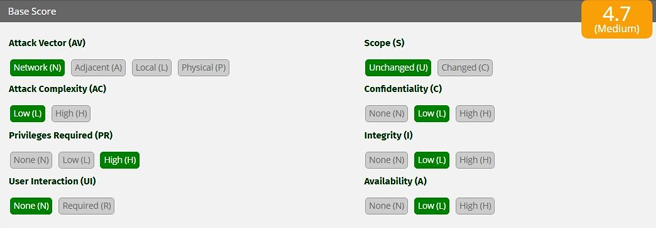

1. Introducción
El presente reporte documenta el ciberataque sufrido por Equifax en 2017, considerado uno de los incidentes de ex-filtración masiva más graves en el sector financiero. El ataque fue posible mediante la explotación de la vulnerabilidad CVE-2017-5638 en Apache Struts, la cual permitió la ejecución remota de código (RCE) debido a la omisión de un parche de seguridad disponible meses antes del incidente.
La brecha expuso deficiencias críticas en la gestión de activos y la visibilidad operativa, destacando el vencimiento de certificados SSL que impidieron la detección del tráfico malicioso durante 76 días. Con un impacto que afectó a 147.5 millones de víctimas y resultó en un acuerdo judicial de $1.4 mil millones de USD.
Este estudio tiene el propósito de evaluar las consecuencias bajo el modelo CIA (Confidencialidad, Integridad y Disponibilidad) para comprender la relación entre la ciberseguridad y la sostenibilidad organizacional.
2. Cronología Detallada (Expediente EQX-2017)
| Fecha | Hora | Evento Crítico Registrado |
|---|---|---|
| 07 Mar, 2017 | 10:00 hrs | El Departamento de Seguridad Nacional de EE. UU. (DHS) emite una alerta crítica sobre la vulnerabilidad CVE-2017-5638 en Apache Struts. |
| 08 Mar, 2017 | 09:00 hrs | El equipo de seguridad global de Equifax recibe la notificación oficial y clasifica el riesgo como "Inminente y Crítico". |
| 09 Mar, 2017 | 08:30 hrs | Se distribuye un correo interno a todos los administradores de sistemas ordenando la aplicación del parche en un periodo máximo de 48 horas. |
| 10 Mar, 2017 | 17:00 hrs | Fallo Operativo: el escaneo no identifica el portal de disputas de consumidores como sistema vulnerable debido a una configuración de red errónea. |
| 12 Mar, 2017 | 00:00 hrs | Vence el plazo interno para el parcheo. El servidor crítico queda expuesto y sin protección en el puerto 443. |
| 13 May, 2017 | 21:15 hrs | Intrusión inicial: actores de amenaza detectan el vector de entrada. Se registra el primer comando de ejecución remota (RCE) exitoso. |
| 14 May, 2017 | 04:00 hrs | Comienza el reconocimiento de la red interna. Los atacantes buscan archivos de configuración locales. |
| 15 May, 2017 | 11:20 hrs | Hallazgo de evidencia crítica: los atacantes localizan un archivo con credenciales de bases de datos en texto plano. |
| 16 May, 2017 | 02:00 hrs | Inicia el movimiento lateral. Los atacantes acceden a los servidores de bases de datos centrales. |
| 25 May, 2017 | 09:00 hrs | Se establece un canal de exfiltración cifrado. La empresa no detecta el tráfico saliente porque las herramientas de inspección están inactivas. |
| 01 Jun, 2017 | 00:00 hrs | Extracción masiva: 5 millones de registros por día. |
| 10 Jun, 2017 | 10:30 hrs | Los atacantes expanden su presencia instalando más de 30 web shells adicionales en distintos servidores. |
| 01 Jul, 2017 | 08:00 hrs | El ataque se vuelve selectivo; se extraen datos específicos de tarjetas de crédito y documentos de identidad escaneados. |
| 15 Jul, 2017 | 23:00 hrs | Se registra actividad desde direcciones IP vinculadas a infraestructuras de inteligencia extranjera. |
| 28 Jul, 2017 | 16:00 hrs | El equipo de seguridad de red nota una anomalía en el rendimiento de un servidor durante una revisión de rutina. |
| 29 Jul, 2017 | 10:15 hrs | DETECCIÓN: Certificado SSL vencido desde Sept 2016. |
| 30 Jul, 2017 | 09:00 hrs | Se activa el Protocolo de Respuesta a Incidentes. Se contrata a la firma externa Mandiant para realizar el peritaje forense. |
| 02 Ago, 2017 | 12:00 hrs | SEl análisis forense confirma la exfiltración masiva. El conteo inicial es de 130 millones de víctimas. |
| 15 Ago, 2017 | 17:00 hrs | La alta dirección es informada de la magnitud del desastre. Se discute la estrategia de comunicación legal. |
| 24 Ago, 2017 | 10:00 hrs | Tres altos ejecutivos de Equifax venden acciones de la empresa por un valor de $1.8 millones. |
3. Tabla Técnica del Ataque:
| Elemento | Descripcion |
|---|---|
| Tipo de ataque | Explotación de vulnerabilidad de ejecución remota de código (RCE) y exfiltración masiva de datos. |
| Actor o grupo atacante | Actores vinculados a infraestructuras de inteligencia extranjera. |
| Vector de entrada | Portal de disputas de consumidores expuesto a través del puerto 443. |
| Vulnerabilidad explotada | CVE-2017-5638 en Apache Struts, con una gravedad de 10.0 (Crítico). |
| Etapas del ataque (MITRE ATT&CK) | 1. Intrusión inicial. 2. Persistencia (instalación de Web Shells). 3. Reconocimiento interno. 4. Movimiento lateral a bases de datos5. Exfiltración cifrada de datos. |
| Sistemas o servicios comprometidos | Servidor web del portal de disputas y servidores de bases de datos centrales de crédito. |
| Duración del incidente | 76 dias de actividad maliciosa activa (del 13 de mayo al 29 de julio de 2017). |
| Mecanismos de detección y respuesta | Identificación de tráfico sospechoso durante revisión de rutina. Bloqueo del portal, activación de protocolo de respuesta y contratación de Mandiant para peritaje forense. |
Recurso Multimedia: Análisis del Caso Equifax
4. Análisis Estratégico y Técnico
Omisión de Mantenimiento
" La vulnerabilidad CVE-2017-5638 fue pública y tuvo una solución técnica inmediata (parche) desde marzo. La incapacidad de Equifax para identificar qué servidores corrían dicho software demuestra una falta de inventario de activos, violando los principios básicos de marcos internacionales como ISO 27001. "
Falla de Visibilidad
"El hecho de que un Certificado SSL estuviera vencido por 10 meses no es un error menor; es una negligencia grave. En términos policiales, es equivalente a tener cámaras de seguridad en un banco, pero no tener a nadie mirando el monitor porque el cable está desconectado. Los atacantes filtraron gigabytes de información a plena vista, protegidos por el mismo cifrado que la empresa debía supervisar"
Higiene de Datos
" Una vez que el perímetro fue vulnerado, los atacantes no enfrentaron resistencia interna. El hallazgo de credenciales de bases de datos en texto plano eliminó la necesidad de realizar ataques de fuerza bruta complejos. Esto permitió que una intrusión web se transformara en un acceso total a la "joyería" de la empresa: los datos crediticios."
Evaluación Impacto (CIA)
| Principio | Evidencia del caso |
|---|---|
| Confidencialidad | Robo de registros de 147.5 millones de personas, incluyendo nombres, números de seguro social, fechas de nacimiento y datos de tarjetas de crédito. |
| Integridad | Localización de archivos con credenciales en texto plano y ejecución de "queries" de prueba para medir la respuesta de la base de datos de crédito. |
| Disponibilidad | Bloqueo total del acceso al portal de disputas el 29 de julio y caída del sitio web de ayuda tras el anuncio público debido a la saturación. |
Impacto Financiero Proyectado
Tipo de Cambio 2017: ≈ $18.50 MXN
5. Relación con Marcos Normativos
| Marco Normativo | Fallo Detectado | Acción Preventiva |
|---|---|---|
| ISO 27001:2013 | A.12.6.1 Gestión de vulnerabilidades técnicas Equifax no identificó ni parchó la vulnerabilidad CVE-2017-5638 a tiempo. | Si se hubiera aplicado el parche dentro de las 48 horas posteriores a la alerta, el vector de ataque RCE habría sido ineficaz en mayo, impidiendo la intrusión inicial. |
| ISO 27001:2013 | A.8.1.1 Inventario de activos La empresa no sabía que el "Portal de Disputas" ejecutaba Apache Struts, por lo que quedó fuera del alcance del mantenimiento. | Un inventario actualizado habría alertado a los administradores de que ese servidor específico requiera atención inmediata, asegurando que no quedaran "puntos ciegos" en la red. |
| NIST CSF | DE.CM-1 (Detección / Monitoreo Continuo) El tráfico malicioso no fue detectado durante 76 días debido a que el certificado SSL del dispositivo de inspección (IDS/IPS) estaba vencido. | Si el certificado SSL hubiera estado vigente, el sistema de inspección habría descifrado el tráfico, detectado las firmas de las Web Shells y alertado al equipo de seguridad en horas, no en meses. |
| NIST CSF | PR.AC-1 (Protección / Control de Acceso) Los atacantes encontraron credenciales de bases de datos almacenadas en texto plano dentro de los servidores comprometidos. | Si las credenciales hubieran estado cifradas o gestionadas mediante una bóveda (PAM), el movimiento lateral hacia las bases de datos críticas habría sido extremadamente difícil, limitando el alcance del robo. |
| GDPR | Art. 32 Seguridad del tratamiento Se falló en implementar medidas técnicas apropiadas para garantizar la confidencialidad de los datos personales. | Si la base de datos hubiera estado cifrada en reposo (Data at Rest Encryption) y separada lógicamente de la aplicación web, los datos exfiltrados habrían sido ilegibles e inútiles para los atacantes. |
6. Recomendaciones estratégicas:
Conclusiones
El ciberataque a Equifax no fue el resultado de una técnica de hackeo sofisticada e inevitable, sino la consecuencia de una serie de fallas operativas y negligencias en la gestión de seguridad. A continuación, se presentan los aprendizajes clave y las acciones preventivas necesarias para cualquier organización:
El caso Equifax es un recordatorio de que marcos como ISO 27001 y NIST CSF no son solo requisitos de cumplimiento, sino herramientas de supervivencia. Para una organización moderna, la ciberseguridad es una responsabilidad ética y financiera: la confianza del cliente, una vez perdida por fallos evitables como la falta de un parche o un certificado vencido, es el activo más difícil y costoso de recuperar
Bibliografia
Introducción
La presente actividad se fundamenta en la aplicación de dos pilares de la seguridad de la información: la recomendación ITU-T X.800, que establece la arquitectura de seguridad para sistemas abiertos, y el RFC 4949, que proporciona un glosario técnico estandarizado para la comunidad de Internet. La integración de ambos marcos permite no solo identificar qué servicio ha fallado (X.800), sino también caracterizar la naturaleza técnica del incidente (RFC 4949) con precisión profesional.
Glosario de Seguridad

Escenario 1
En múltiples incidentes atribuidos al grupo LockBit, organizaciones públicas y privadas han sufrido el cifrado masivo de servidores tras un acceso inicial no autorizado. Antes de ejecutar el ransomware, los atacantes exfiltraron información sensible y posteriormente amenazaron con su publicación, evidenciando un compromiso simultáneo de la confidencialidad, la integridad y la disponibilidad.
Desde el enfoque del RFC 4949, el incidente se clasifica como un multi-stage attack con data breach y availability attack, donde la indisponibilidad del sistema es solo una fase final del daño. La ausencia de respaldos inmutables y de detección temprana permitió que el impacto fuera total.
| Elemento | Respuesta |
|---|---|
| Servicios X.800 comprometidos | Confidencialidad, Integridad y Disponibilidad. |
| Definición(es) aplicable(s) RFC 4949. | Data Breach: Acceso y exfiltración. Availability Attack: Cifrado masivo. Multistage attack: Fases sucesivas de compromiso. |
| Tipo de amenaza. | Externa (Cibercrimen organizado). |
| Vector de ataque. | Acceso inicial no autorizado (explotación de vulnerabilidad o credenciales). |
| Impacto técnico / operativo. | Interrupción total de servicios y fuga de datos críticos. |
| Medida de control recomendada. | Respaldos inmutables, segmentación de red y despliegue de EDR/XDR. |
Escenario 2
En diversos casos documentados, bases de datos completas quedaron accesibles públicamente debido a errores de configuración en servicios de almacenamiento en la nube. No existió una explotación técnica sofisticada, sino una falla en el control de acceso, lo que derivó directamente en la pérdida de confidencialidad de los datos. El RFC 4949 describe este tipo de incidentes como misconfiguration y exposure, subrayando que la amenaza no siempre implica malware o intrusión activa. El impacto suele ser legal y reputacional, aun cuando no se pueda demostrar acceso malicioso.
| Elemento | Respuesta |
|---|---|
| Servicios X.800 comprometidos | Confidencialidad y Control de Acceso. |
| Definición(es) aplicable(s) RFC 4949. | Misconfiguration: Error de ajuste de seguridad. Exposure: Datos sensibles accesibles sin protección. |
| Tipo de amenaza. | Interna (Inadvertida/Error humano). |
| Vector de ataque. | Interfaz de administración de la nube mal configurada (Bucket abierto). |
| Impacto técnico / operativo. | Exposición pública de datos; sanciones legales y daño reputacional. . |
| Medida de control recomendada. | Implementación de CSPM (Cloud Security Posture Management) y auditorías automatizadas. |
Escenario 3
Un proveedor legítimo de software fue comprometido y distribuyó una actualización que incluía código malicioso, afectando a cientos de organizaciones que confiaban en él. Este escenario refleja una violación grave de la integridad de los sistemas y, en muchos casos, de la confidencialidad, al permitir accesos no autorizados posteriores. El RFC 4949 lo identifica como supply chain attack, destacando el abuso de relaciones de confianza. El daño es particularmente crítico porque rompe el supuesto de legitimidad del software firmado.
| Elemento | Respuesta |
|---|---|
| Servicios X.800 comprometidos | Confidencialidad, Integridad y Disponibilidad. |
| Definición(es) aplicable(s) RFC 4949. | Supply Chain Attack: Ataque a través de un proveedor. Malicious Logic: Código dañino insertado. |
| Tipo de amenaza. | Externa (Sofisticada/Nivel Estado-Nación). |
| Vector de ataque. | Actualización de software legítima comprometida. |
| Impacto técnico / operativo. | Compromiso masivo de la cadena de suministro y pérdida de confianza. |
| Medida de control recomendada. | Verificación de firmas digitales (hashes) y análisis de SBOM (Software Bill of Materials). |
Escenario 4
Mediante campañas de phishing, atacantes obtuvieron credenciales válidas y accedieron a sistemas corporativos durante meses sin levantar alertas. Aunque la autenticación funcionó técnicamente, el servicio de autenticación fue comprometido al basarse en credenciales robadas, afectando también el control de acceso. Según el RFC 4949, se trata de un credential compromise con authentication failure conceptual, no técnica. La falta de MFA y de monitoreo de comportamiento facilitó la persistencia del atacante
| Elemento | Respuesta |
|---|---|
| Servicios X.800 comprometidos | Autenticación y Control de Acceso. |
| Definición(es) aplicable(s) RFC 4949. | Credential Compromise: Robo de secretos. Authentication Failure: Falla en la validación de identidad real. |
| Tipo de amenaza. | Externa (Ingeniería Social). |
| Vector de ataque. | Campañas de Phishing dirigidas. |
| Impacto técnico / operativo. | Persistencia del atacante en la red y movimiento lateral. |
| Medida de control recomendada. | Implementación de MFA (Autenticación de Múltiples Factores) y monitoreo de comportamiento (UEBA). |
Escenario 5
En ataques de ransomware avanzados, los atacantes eliminaron o cifraron los respaldos antes de afectar los sistemas productivos. Este hecho compromete directamente la disponibilidad y la integridad de la información, al impedir la recuperación. El RFC 4949 clasifica este comportamiento como data destruction y availability attack, evidenciando intención deliberada de maximizar el daño. La inexistencia de respaldos offline o inmutables convierte el incidente en catastrófico.
| Elemento | Respuesta |
|---|---|
| Servicios X.800 comprometidos | Disponibilidad e Integridad. |
| Definición(es) aplicable(s) RFC 4949. | Data Destruction: Eliminación deliberada. Availability Attack: Impedimento de recuperación. |
| Tipo de amenaza. | Externa (Ataque destructivo). |
| Vector de ataque. | Escalada de privilegios hasta sistemas de respaldo. |
| Impacto técnico / operativo. | Imposibilidad de recuperación ante desastres (catastrófico). |
| Medida de control recomendada. | Almacenamiento "Air-gapped" (fuera de línea) y backups inmutables. |
Escenario 6
Un empleado con acceso legítimo extrajo bases de datos completas y las vendió a terceros, sin explotar vulnerabilidades técnicas. El servicio afectado fue principalmente la confidencialidad, junto con fallas en el control de acceso por exceso de privilegios. El RFC 4949 define este escenario como insider threat, destacando que el riesgo interno puede ser tan grave como el externo. La carencia de monitoreo y de políticas de mínimo privilegio fue determinante.
| Elemento | Respuesta |
|---|---|
| Servicios X.800 comprometidos | Confidencialidad y Control de Acceso. |
| Definición(es) aplicable(s) RFC 4949. | Insider Threat: Amenaza interna. Misuse: Uso indebido de privilegios legítimos. |
| Tipo de amenaza. | Interna (Maliciosa). |
| Vector de ataque. | Extracción directa desde la base de datos por personal autorizado. |
| Impacto técnico / operativo. | Robo de propiedad intelectual y pérdida de ventaja competitiva. |
| Medida de control recomendada. | Principio de mínimo privilegio y sistemas DLP (Data Loss Prevention). |
Escenario 7
Tras un ataque, los registros del sistema quedaron cifrados o alterados, impidiendo reconstruir la secuencia de eventos. Esto compromete la integridad de los datos y el no repudio, ya que no es posible demostrar qué ocurrió ni quién fue responsable. Desde el RFC 4949, se trata de una violación de evidentiary integrity y del audit trail. El impacto no solo es técnico, sino también probatorio y legal.
| Elemento | Respuesta |
|---|---|
| Servicios X.800 comprometidos | Integridad y No Repudio. |
| Definición(es) aplicable(s) RFC 4949. | Audit Trail: Registro de eventos. Evidentiary Integrity: Validez de las pruebas. |
| Tipo de amenaza. | Externa/Interna (Encubrimiento). |
| Vector de ataque. | Modificación o cifrado de archivos de registro (logs). |
| Impacto técnico / operativo. | Incapacidad de realizar forense digital o atribuir responsabilidades. |
| Medida de control recomendada. | Servidor de Logs centralizado y protegido (WORM - Write Once Read Many). |
Escenario 8
Una actualización mal ejecutada provocó la caída simultánea de múltiples servicios críticos a nivel global. Aunque no existió un atacante, el servicio de disponibilidad fue gravemente afectado. El RFC 4949 contempla estos eventos como operational failure, recordando que la seguridad también se ve afectada por errores internos. La falta de pruebas previas y planes de reversión amplificó el impacto
| Elemento | Respuesta |
|---|---|
| Servicios X.800 comprometidos | Disponibilidad. |
| Definición(es) aplicable(s) RFC 4949. | Operational Failure: Falla en la operación. Accident: Evento no intencional. |
| Tipo de amenaza. | Interna (Inadvertida). |
| Vector de ataque. | Actualización de software mal probada o errónea. |
| Impacto técnico / operativo. | Caída global de servicios y pérdidas financieras inmediatas. |
| Medida de control recomendada. | Gestión de cambios estricta, entornos de staging y planes de rollback. |
Escenario 9
Atacantes replicaron sitios y correos oficiales para engañar a ciudadanos y obtener información sensible. Este escenario afecta la autenticación, al suplantar identidades legítimas, y la confidencialidad de los datos recolectados. El RFC 4949 lo clasifica como masquerade y phishing, subrayando el componente de ingeniería social. La ausencia de mecanismos de autenticación del dominio y de concientización facilitó el éxito del ataque.
| Elemento | Respuesta |
|---|---|
| Servicios X.800 comprometidos | Autenticación y Confidencialidad. |
| Definición(es) aplicable(s) RFC 4949. | Masquerade: Suplantación de identidad. Phishing: Engaño para obtener datos. |
| Tipo de amenaza. | Externa (Ingeniería Social). |
| Vector de ataque. | Réplica de sitios web y correos electrónicos oficiales. |
| Impacto técnico / operativo. | Robo de identidad de ciudadanos y desconfianza institucional. |
| Medida de control recomendada. | Implementación de DMARC/SPF/DKIM y concientización (Security Awareness). |
Escenario 10
En algunos incidentes, tras exfiltrar información, los atacantes ejecutaron acciones destructivas para borrar sistemas completos y eliminar rastros. Se produce un compromiso total de la confidencialidad, la integridad y la disponibilidad, configurando uno de los peores escenarios posibles. El RFC 4949 describe este patrón como destructive attack, donde el objetivo no es solo el lucro, sino el daño irreversible. La detección tardía impidió cualquier contención efectiva
| Elemento | Respuesta |
|---|---|
| Servicios X.800 comprometidos | Confidencialidad, Integridad y Disponibilidad. |
| Definición(es) aplicable(s) RFC 4949. | Destructive Attack: Objetivo de daño total. Wiper: Malware que borra datos. |
| Tipo de amenaza. | Externa (Adversario avanzado). |
| Vector de ataque. | Exfiltración seguida de borrado masivo de sistemas. |
| Impacto técnico / operativo. | Destrucción de activos digitales y cese de operaciones. |
| Medida de control recomendada. | Respuesta a incidentes rápida y segmentación crítica de red. |
Conclusiones
EEl uso de estándares internacionales permite una gestión de incidentes más robusta y una comunicación efectiva entre departamentos técnicos y directivos. Mientras que el ITU-T X.800 nos ayuda a entender el "qué" se debe proteger, el RFC 4949 nos da el lenguaje para explicar el "cómo" fue atacado. En el entorno actual, la prevención debe ir acompañada de una capacidad de detección temprana y una resiliencia operativa basada en la integridad de los datos.
Tomando a México/Latinoamérica, donde la madurez digital es variable, es crucial adoptarestos marcos estandarizados para:
Referencias Tecnicas
1. Flujo del Paquete y Arquitectura
"Cuando un paquete llega al sistema, primero pasa por una Tabla, después por una Cadena y finalmente se ejecuta una acción."
2. Relaciona cada tabla con su propósito principal.
| Tabla | Propósito Principal | Ejemplo de Uso |
|---|---|---|
| FILTER | Filtrado de paquetes (p. Firewall) | Permitir o bloquear tráfico |
| NAT | Traducción de direcciones | Hacer NAT o Forwarding |
| MANGLE | Modificación avanzada de paquetes | Cambiar cabeceras |
| RAW | Excepciones al seguimiento de conexión | Paquetes que no deben ser inspeccionados |
| SECURITY | Aplicar etiquetas de seguridad (SELinux) | Contextos de seguridad adicionales |
3. Anatomía de un comando iptables
Comando completado:
iptables -A INPUT -p tcp -m multiport --dports 80,443 -j ACCEPT
4. Este comando permite:
Permitir el tráfico de entrada del protocolo TCP hacia los puertos de destino 80 (HTTP) y 443 (HTTPS).
5. Variables y opciones comunes
a) Limitar intentos por minuto:
-m limit
b) Filtrar por IP de origen:
-s [Source IP]
c) Ver solo números (sin resolución DNS):
iptables -L -n
d) Ver reglas con contadores (paquetes y bytes):
iptables -L -v
6. ¿Qué hace esta regla?
iptables -A INPUT -i eth0 -p tcp -m multiport --dports 22,80,443 -m state --state NEW, ESTABLISHED -j ACCEPT
Explicación: Permite tráfico TCP entrante por la interfaz eth0 a los puertos 22, 80 y 443, siempre que sea parte de una conexión nueva o establecida.
7. Permitir tráfico HTTP entrante
iptables -A INPUT -p tcp --dport 80 -j ACCEPT
8. Permitir todo el tráfico saliente
iptables -P OUTPUT ACCEPT
9. Permitir SSH solo desde la IP 192.168.1.50
iptables -A INPUT -p tcp -s 192.168.1.50 --dport 22 -j ACCEPT
10. Permitir tráfico TCP entrante a puertos 80 y 443 solo si es conexión establecida o relacionada
iptables -A INPUT -p tcp -m multiport --dports 80,443 -m state --state ESTABLISHED,RELATED -j ACCEPT
11. Permitir tráfico TCP entrante por eth0 a 22, 80 y 443, registrar intentos y permitir solo NEW y ESTABLISHED
1. iptables -A INPUT -i eth0 -p tcp -m multiport --dports 22,80,443 -j LOG --log-prefix "INTENTO_ENTRADA: "
2. iiptables -A INPUT -i eth0 -p tcp -m multiport --dports 22,80,443 -m state --state NEW,ESTABLISHED -j ACCEPT
Conclusion
"La correcta interpretación de las tablas y cadenas en iptables es fundamental para el endurecimiento (hardening) de servidores Linux, permitiendo un control granular sobre el tráfico basado en estados y puertos específicos."
Referencias Tecnicas
Introducción
La configuración de firewalls mediante iptables representa una de las capas de defensa más críticas en entornos Linux. En esta actividad, se diseñó un conjunto de reglas basadas en el principio de "Denegación Implícita", donde se bloquea todo el tráfico por defecto y solo se permite explícitamente lo necesario para el funcionamiento de los servicios web, de correo y DNS, garantizando la integridad de la red interna frente a amenazas externas.

1. Establecer una política restrictiva.
Se bloquea todo el tráfico entrante, saliente y de reenvío por defecto.
iptables -P INPUT DROP
iptables -P FORWARD DROP
iptables -P OUTPUT DROP
2. Permitir el tráfico de conexiones ya establecidas.
Garantiza que las respuestas a peticiones legítimas no sean bloqueadas.
iptables -A FORWARD -m state --state ESTABLISHED,RELATED -j ACCEPT
iptables -A INPUT -m state --state ESTABLISHED,RELATED -j ACCEPT
iptables -A OUTPUT -m state --state ESTABLISHED,RELATED -j ACCEPT
3. Aceptar tráfico DNS (TCP) saliente de la red local.
iptables -A FORWARD -p tcp --dport 53 -j ACCEPT
4. Aceptar correo entrante proveniente de Internet en el servidor de correo.
El puerto estándar para correo (SMTP) es el 25. El destino es la IP 192.1.2.11
iptables -A FORWARD -p tcp -d 192.1.2.11 --dport 25 -j ACCEPT
5. Permitir correo saliente a Internet desde el servidor de correo.
iptables -A FORWARD -p tcp -s 192.1.2.11 --dport 25 -j ACCEPT
6. Aceptar conexiones HTTP desde Internet a nuestro servidor web.
El destino es la IP 192.1.2.10 en el puerto 80.
iptables -A FORWARD -p tcp -d 192.1.2.10 --dport 80 -j ACCEPT
7. Permitir tráfico HTTP desde la red local a Internet.
iptables -A FORWARD -p tcp --dport 80 -j ACCEPT
Conclusion
"La implementación de estas reglas permite un control granular sobre el flujo de datos. Al utilizar el estado de las conexiones (stateful inspection), el firewall no solo filtra por puertos, sino que reconoce el contexto de la comunicación. Esta práctica es fundamental para reducir la superficie de ataque y asegurar que cada nodo de la red cumpla exclusivamente con su función designada sin exponer servicios vulnerables a internet."
Referencias Tecnicas
Introducción
El Pentesting o pruebas de penetración no es un proceso arbitrario; requiere de marcos de trabajo (frameworks) que estandaricen las fases de ejecución y aseguren la calidad de los resultados. En esta actividad se realiza un análisis comparativo entre las metodologías más influyentes de la industria, como MITRE ATT&CK, OWASP y NIST, con el objetivo de comprender sus enfoques particulares, desde la seguridad en aplicaciones web hasta la medición científica de la seguridad operativa.
Comparativa de Metodologías de Seguridad
| Aspecto | MITRE ATT&CK | OWASP WSTG | NIST SP 800-115 | OSSTMM | PTES | ISSAF |
|---|---|---|---|---|---|---|
| Descripción | Base de conocimiento global de tácticas y técnicas de adversarios basada en ataques reales. | Guía líder para pruebas de seguridad en aplicaciones web y servicios relacionados. | Guía técnica para realizar pruebas y evaluaciones de seguridad en sistemas federales y privados. | Estándar científico para la medición de la seguridad operativa mediante canales de comunicación. | Estándar centrado en la calidad técnica y la gestión de negocios de un Pentest. | Marco exhaustivo que vincula la evaluación técnica con la gobernanza y procesos de negocio. |
| Fases | 14 Tácticas (Reconocimiento, Acceso Inicial, Persistencia, Exfiltración, etc.). | 11 categorías de prueba: Recopilación, Gestión de ID, Autenticación, Sesión, Validación de datos, etc. con +90 casos de prueba | 1. Planificación 2. Ejecución 3. Post-ejecución (Análisis de hallazgos). |
Canales: 1. Humano 2.Físico 3. Inalámbrico 4. Telecomunicaciones 5. Redes de Datos. |
7 fases: Pre-acuerdo, Inteligencia ,Modelado, Vulnerabilidad, Explotación , Post-explotación y Reporte. | 4 fases: Planeación, Evaluación (Red, Host, App), Reporte y Limpieza. |
| Objetivo | Detección de técnicas de ataque y simulación de adversarios (Red/Blue Team). | Asegurar el ciclo de vida de aplicaciones web y detectar vulnerabilidades críticas. | Evaluación de controles de seguridad y cumplimiento normativo. | Medir la seguridad operativa y el cumplimiento mediante métricas (RAV). | Estandarizar la ejecución técnica y los resultados comerciales de un Pentest. | Evaluación integral de infraestructura, políticas y seguridad de la información. |
| Escenarios | Operaciones de Threat Hunting, SOC y diseño de defensas activas. | Auditoría de aplicaciones web, portales corporativos y APIs. | Auditorías en agencias gubernamentales y sectores regulados. | Pruebas de seguridad física y lógica donde se requiere medición científica. | Pentests profesionales externos o internos de gran escala. | Auditorías integrales de TI y gestión de riesgos corporativos. |
| Orientación | Ataque y Defensa (Híbrido). | Evaluación y Ataque. | Evaluación Técnica. | Evaluación y Verificación. | Ataque y Negocio. | Evaluación y Gestión. |
| Responsable | MITRE Corporation. | OWASP Foundation. | NIST (Gobierno EE. UU.). | ISECOM. | Comunidad experta (PTES Board). | OISSG (Open Information Systems Security Group). |
| URL Oficial | attack.mitre.org | owasp.org/wstg | csrc.nist.gov | isecom.org | pentest-standard.org | https://sourceforge.net/ |
| Certificados | MAD (MITRE ATT&CK Defender). | No tiene una directa (influye en OSWE, CEH). | Alineado con CISA y CISSP. | OPST, OPSA, OPSE. | No tiene propia (base de la mayoría de certificaciones). | No vigente. |
| Version | v16.x (Actualización continua). | v5.0 (Estable en 2026). | Referencia técnica base (revisada vía CSF 2.0). | v3.0 (v4.0 en desarrollo prolongado). | v1.1 | v0.2.1 (Considerado histórico). |
Recurso: ¿Qué es el Pentesting y la Auditoría Real?
Conclusión
El análisis comparativo permite concluir que no existe una metodología "superior" de forma absoluta, sino que su eficacia depende del contexto del proyecto. Mientras que OWASP WSTG es el estándar indiscutible para entornos web, PTES ofrece una estructura de negocio mucho más robusta para consultorías comerciales.
Para nosotros como estudiantes de Tecnologias de la Informacion, el dominio de estos marcos proporciona una ventaja competitiva: permite transformar una simple búsqueda de fallos en un proceso de auditoría formal. La tendencia actual apunta hacia la adopción de MITRE ATT&CK para complementar el pentesting tradicional, permitiendo que las organizaciones no solo sepan qué tan vulnerables son, sino cómo se comportaría un adversario real dentro de su infraestructura.
Referencias Tecnicas

Captura: Configuración final de la topología en Cisco Packet Tracer.
1. Introducción
La interconexión de sedes remotas a través de redes públicas (Internet) plantea desafíos críticos de seguridad. Este reporte detalla la implementación de una VPN (Virtual Private Network) de sitio a sitio utilizando el protocolo IPSec (Internet Protocol Security).
Basado en las evidencias de configuración de múltiples nodos, el objetivo primordial fue establecer un canal de comunicación que garantice la confidencialidad, integridad y autenticación de los datos entre dos redes locales (LAN) geográficamente distantes, utilizando Cisco Packet Tracer como entorno de simulación.
2. Topología y Componentes del Sistema
La infraestructura configurada se compone de tres segmentos principales:
Sitio Local (R1)
Red: 192.168.1.0/24
Gateway: 209.165.100.1
Sitio Remoto (R3/R2)
Red: 192.168.3.0/24
Gateway: 209.165.200.1
Nodo de Transporte (ISP)
Router intermedio encargado del enrutamiento de paquetes cifrados.
3. Proceso de Implementación Técnica
Fase I: Preparación del Entorno
Antes de la configuración criptográfica, se realizaron pasos críticos de infraestructura:
- Activación de Licencias: Se habilitó el paquete
securityk9mediante el comandolicense boot module, necesario para los algoritmos de cifrado en routers Cisco 1941. - Enrutamiento Base: Se establecieron rutas estáticas y direcciones IP en las interfaces WAN para asegurar la conectividad entre los "Peers".
Fase II: Configuración de la Fase 1 (IKE / ISAKMP)
En esta etapa se define "cómo se van a saludar" los routers para crear un canal de administración seguro.
R1(config)# crypto isakmp policy 10
R1(config-isakmp)# encryption aes 256
R1(config-isakmp)# hash sha
R1(config-isakmp)# authentication pre-share
R1(config-isakmp)# group 5
Se definió el algoritmo AES-256, hash SHA y el Grupo Diffie-Hellman 5.
Fase III: Configuración de la Fase 2 (IPSec Transform Set)
Aquí se define cómo se protegerán los datos reales del usuario.
- Transform Set: Uso de
ESP-AESpara cifrado yESP-SHA-HMACpara autenticación. - Tráfico Interesante: Mediante Listas de Control de Acceso (ACL), se definió que únicamente el tráfico de la LAN local a la remota sea procesado.
Fase IV: Creación y Aplicación del Mapa Criptográfico
El "Crypto Map" une las piezas: asocia la ACL, apunta a la IP pública del peer remoto y establece el Transform Set. Se aplica a la interfaz de salida con el comando crypto map [nombre].
4. Verificación y Pruebas de Funcionamiento
| Método | Comando / Acción | Resultado Esperado |
|---|---|---|
| Conectividad | ping 192.168.3.10 |
Éxito entre hosts remotos. |
| Análisis IPSec | show crypto ipsec sa |
Incremento en #pkts encaps/decaps. |
| Estado Túnel | show crypto isakmp sa |
QM_IDLE (Activo) |
5. Conclusiones y Reflexiones
"La implementación exitosa de IPSec demuestra que es posible convertir una red insegura en un canal privado corporativo de alta fiabilidad."
Consistencia: Cualquier discrepancia en los parámetros de la Fase 1 o 2 impide el establecimiento del túnel, subrayando la importancia de la precisión técnica.
Transparencia: Para los usuarios finales, el proceso de cifrado es transparente, manteniendo la usabilidad de la red mientras se eleva el estándar de protección.
Escalabilidad: Esta configuración permite a organizaciones interconectar múltiples sucursales de manera económica comparada con líneas dedicadas tradicionales.
Referencias Tecnicas
Proyectos Académicos y de Investigación
PR01: De la teoria a la practica: walkthrough en accion (guia y video)
Demostrar la capacidad de aplicar conocimientos teóricos de seguridad informática en un entorno práctico, mediante la realización de un walkthrough detallado y la explicación de las técnicas y metodologías utilizadas para vulnerar una máquina virtual
PR02: El eslabón más débil: diseño ético de una campaña de ingeniería social - Quiz Phishing.
Diseñar, implementar y evaluar de manera ética una simulación educativa dephishing, sustentada en el análisis comparativo de plataformas profesionales delmercado, con el propósito de medir el nivel de reconocimiento de amenazas deingeniería social en usuarios, interpretar los resultados mediante un sistema depuntuación global y reflexionar sobre la gestión responsable del riesgo humano en seguridad informática.
PR03: Bajo la lupa: evaluación de ciberseguridad en un corporativo.
DISEÑO E IMPLEMENTACIÓN DEL SISTEMA DE GESTIÓN DE SEGURIDAD DE LA INFORMACIÓN (SGSI) BAJO LA NORMA ISO 27001:2022 EN INSPECCIÓN CERTIFICADA SL.
1. Introducción
Este proyecto demuestra la capacidad de aplicar conocimientos teóricos de seguridad informática en un entorno práctico controlado. El objetivo general es realizar un walkthrough detallado (recorrido técnico) que explique las técnicas y metodologías utilizadas para vulnerar una máquina virtual de entrenamiento, documentando cada fase desde el reconocimiento hasta la post-explotación.
Se seleccionó la máquina virtual Snakeoil de la plataforma VulnHub, la cual presenta diversos vectores de ataque que simulan fallos de configuración y software desactualizado en entornos reales.
2. Marco Teórico
Para la ejecución de este Pentest, se siguieron las fases estándares de la metodología de hacking ético:
Reconocimiento y Escaneo
Uso de herramientas como Nmap para identificar puertos abiertos y servicios en ejecución.
Análisis de Vulnerabilidades
Investigación de exploits conocidos para los servicios detectados y enumeración de directorios web.
Explotación y Post-Explotación
Obtención de acceso inicial, escalada de privilegios y establecimiento de persistencia en el sistema.
3. Demostración en Video
4. Conclusión
La práctica demostró que la seguridad de un sistema es tan fuerte como su eslabón más débil. A través de este walkthrough, se constató la importancia de mantener políticas de Hardening (endurecimiento) de sistemas, tales como el cierre de puertos innecesarios y la gestión robusta de permisos. La metodología aplicada permitió transformar un concepto abstracto en una evidencia técnica de aprendizaje significativo en ciberseguridad.
Bibliografía
- EC-Council. (2024). Certified Ethical Hacker (CEH) v12: Reconnaissance and Scanning Techniques. EC-Council University Press.
- VulnHub. (2021). Snakeoil: 1 - digitalworld.local. Recuperado de https://www.vulnhub.com/entry/snakeoil
- Offensive Security. (2023). Metasploit Unleashed: Mastering the penetration testing framework. Recuperado de https://www.offsec.com/metasploit
1. Introducción y Propósito Estratégico
El phishing sigue consolidándose como el vector de ataque principal a nivel global, responsable de más del 80% de los incidentes de brecha de datos documentados. El objetivo central de esta investigación es analizar exhaustivamente las herramientas tecnológicas que permiten a las organizaciones medir, cuantificar y mitigar este riesgo humano mediante el entrenamiento continuo y la concientización (Security Awareness Training - SAT).
A través de la simulación controlada, el propósito es facilitar la transición de un modelo de seguridad perimetral tradicional y punitivo hacia la consolidación de una Cultura de Seguridad Activa (Human Firewall). Esto implica capacitar a los empleados para que actúen como sensores humanos de detección de amenazas en tiempo real.
"La tecnología por sí sola no puede detener el phishing. La última línea de defensa es siempre el usuario final equipado con el conocimiento adecuado en el momento preciso."
2. Fichas Descriptivas de Plataformas y Arquitectura
A continuación se detallan las características fundamentales de las soluciones líderes del mercado, evaluando sus capacidades de automatización, integración con infraestructuras de correo y enfoques metodológicos de aprendizaje.
KnowBe4
Reconocido como el líder absoluto en el Cuadrante Mágico de Gartner. Destaca por su módulo Virtual Risk Officer (VRO), un sistema que utiliza algoritmos de Machine Learning para predecir el Personal Risk Score (PRS) de cada usuario basándose en su comportamiento histórico, interacciones con correos y resultados de pruebas.
Proofpoint (PSAT)
Propone un enfoque integral de seguridad en el correo electrónico combinado con concientización. Identifica automáticamente a las VAP (Very Attacked People) cruzando datos de su gateway de seguridad (SEG) con el comportamiento del usuario en las simulaciones.
Hoxhunt
Pioneros en el aprendizaje basado en la Gamificación y Psicología Conductual. En lugar de campañas estáticas, Hoxhunt emite simulaciones continuas e individualizadas que aumentan su complejidad mediante IA a medida que el usuario demuestra mayor destreza.
Cofense
Se especializa en el concepto de Detección Colectiva (Crowdsourced Intelligence). Su enfoque primario no es solo educar, sino utilizar a los empleados entrenados para nutrir la plataforma Cofense Triage, acelerando los tiempos de respuesta del SOC (Security Operations Center).
Phished
Destaca como una plataforma Zero-Touch (100% automatizada). Utiliza algoritmos avanzados para raspar información pública (OSINT) y generar simulaciones hiper-personalizadas de Spear Phishing sin requerir intervención del equipo de TI.
Ninjio
Aborda el entrenamiento mediante el Storytelling Cinematográfico. Cada módulo es un micro-episodio animado (estilo anime/cómic) escrito por guionistas de Hollywood y basado en brechas de seguridad documentadas en las noticias.
Mimecast (Awareness Training)
Presenta una integración nativa con su ecosistema de seguridad de correo perimetral. Su Perfil se centra en el entrenamiento conductual para reducir el riesgo humano de manera automatizada.
Infosec IQ
Plataforma con un enfoque pedagógico profundo y un fuerte énfasis en cumplimiento (Compliance). Es ideal para organizaciones con normativas estrictas de capacitación.
3. Análisis Paramétrico y Tabla Técnica Comparativa
Para determinar la viabilidad de implementación, se han evaluado cuatro dimensiones críticas: El nivel de Inteligencia Artificial aplicado, la metodología pedagógica principal, las capacidades de integración con el SOC para respuesta a incidentes, y la madurez de la métrica de reporte.
| Plataforma | Integración de IA & ML | Enfoque y Retención | Botón de Reporte (Phish Alert) | Capacidad SOC / SOAR |
|---|---|---|---|---|
| KnowBe4 | VRO Predictivo, Modelado de Riesgo | Higiene Digital, Cumplimiento Normativo | Nativo (Phish Alert Button) | Media (Requiere PhishER) |
| Hoxhunt | IA Adaptativa, Auto-escala de dificultad | Gamificación, Micro-aprendizaje | Integrado + Recompensas | Alta (Respuesta automatizada) |
| Cofense | Mínima (Generación manual de plantillas) | Detección Humana Colectiva | Nativo (Reporter) | Excelente (Triage nativo) |
| Proofpoint | Media (Conexión directa con TAP/SEG) | Basado en Riesgo y Amenazas Reales | Nativo (PhishAlarm) | Alta (Ecosistema cerrado) |
| Phished | Generación Autónoma via OSINT | Spear-phishing Continuo | Nativo | Baja |
| Ninjio | Baja (Contenido curado) | Storytelling Animado (Engagement) | Nativo | Baja |
| Mimecast | Alta (Análisis de riesgo) | Humor / Micro-aprendizaje | Nativo | Excelente (Integración SEG) |
| Infosec IQ | Media (Rutas de aprendizaje IA) | Pedagógico / Cumplimiento | Nativo | Media |
4. Enfoque Ético, Marco Legal y Metodología de Implementación
El despliegue de simulaciones de phishing en entornos corporativos requiere un marco de gobernanza estricto. Las campañas de ingeniería social interna pueden generar fricción laboral o violar normativas de privacidad si no se estructuran adecuadamente.
Para cumplir con la ética profesional en ciberseguridad, la ejecución de este proyecto recomienda los siguientes pilares fundamentales:
¿Qué es el Phishing?
Phishing Quiz — Concientización en Ingeniería Social
Simulador de Detección de Phishing
Este ejercicio es una simulación educativa diseñada para mejorar la detección de ataques de ingeniería social. No se solicitarán ni se almacenarán contraseñas reales ni datos personales sensibles. Los resultados se emplean exclusivamente con fines pedagógicos.
5. Conclusión: Hacia una Resiliencia Cognitiva
La investigación de estas plataformas demuestra que la simulación de phishing ha evolucionado de ser una simple prueba técnica a convertirse en una herramienta de Ingeniería del Comportamiento. No basta con desplegar tecnología perimetral (firewalls o gateways de correo) si el eslabón humano permanece vulnerable a tácticas de persuasión psicológica.
Las soluciones analizadas como KnowBe4 o Hoxhunt marcan una pauta clara: la efectividad no reside en la dificultad del engaño, sino en la capacidad de generar un "hábito de reporte". Al integrar IA para personalizar ataques, las organizaciones pueden anticiparse a las amenazas reales, transformando a cada empleado en un sensor activo que nutre al SOC en tiempo real.
En última instancia, el éxito de un programa de simulación de phishing no se mide por cuántos usuarios hacen clic, sino por la velocidad con la que la amenaza es identificada, reportada y neutralizada por la comunidad interna, logrando así una verdadera Resiliencia Cognitiva ante el panorama de ciberamenazas modernas.
Referencias Bibliográficas
- Cofense. (2023). Annual State of Phishing Report: Crowdsourced Intelligence and Email Security Trends. cofense.com
- Gartner, Inc. (2024). Magic Quadrant for Security Awareness Computer-Based Training. Gartner Reprint. gartner.com
- Herzog, P. (2010). Open Source Security Testing Methodology Manual (OSSTMM) (v. 3). Institute for Security and Open Methodologies (ISECOM). isecom.org
- Infosec Institute. (2024). Infosec IQ: Phishing Simulation and Security Awareness Training Roadmap. infosecinstitute.com
- KnowBe4. (2024). Phishing Industry Benchmarking Report: Analysis by Industry and Organization Size. knowbe4.com
- Mimecast Services Limited. (2024). Mimecast Awareness Training: Combating Security Fatigue with Behavior Science. mimecast.com
- MITRE Corporation. (2024). MITRE ATT&CK v16: Adversary Tactics and Techniques Based on Real-World Observations. attack.mitre.org
- National Institute of Standards and Technology. (2008). Technical Guide to Information Security Testing and Assessment (NIST Special Publication 800-115). U.S. Department of Commerce. csrc.nist.gov
- OWASP Foundation. (2024). Web Security Testing Guide (WSTG) (v. 4.2/5.0). owasp.org/wstg
- PTES Board. (s. f.). The Penetration Testing Execution Standard. pentest-standard.org
Para una revisión detallada de comandos y evidencias:
DESCARGAR REPORTE COMPLETO (PR02)1. Descripción de la Institución
1.1 Datos Generales
Inspección Certificada SL es una empresa mexicana líder especializada en la prestación de servicios de inspección, verificación, ensayos y certificación de calidad industrial. Con sede central en la ciudad de San Luis Potosí, la organización opera bajo estrictos esquemas de acreditación nacional e internacional, sirviendo como un eslabón crítico en la cadena de valor de los sectores automotriz, manufacturero, metalmecánico y logístico de la región del Bajío.
1.2 Breve Historia de la Empresa
Fundada en respuesta al dinámico crecimiento industrial del estado de San Luis Potosí, Inspección Certificada SL nació con el objetivo de proveer soluciones confiables de control de calidad localizadas que disminuyeran los tiempos de respuesta y costos para las empresas de la zona. A lo largo de sus años de operación, ha expandido su infraestructura técnica mediante laboratorios especializados de metrología y ensayos no destructivos (NDT). Esta evolución constante la posicionó rápidamente como un socio estratégico confiable para contratistas y armadoras globales, consolidando una infraestructura tecnológica que hoy en día gestiona un volumen masivo de datos confidenciales, planos de ingeniería e informes de validación de sus clientes.
1.3 Misión, Visión y Valores Corporativos
Misión
Garantizar la máxima seguridad, conformidad técnica y eficiencia operativa de los activos e infraestructura industrial de nuestros clientes a través de servicios de inspección y certificación de clase mundial, respaldados por un equipo altamente calificado y tecnología de vanguardia.
Visión
Ser la institución de certificación e inspección de referencia absoluta en el centro del país para el año 2030, reconocida internacionalmente por su integridad intransigente, digitalización de procesos y excelencia en la protección de los datos y la propiedad intelectual de la industria.
Valores Corporativos
- Integridad: Actuamos con total transparencia, objetividad y ética profesional en cada dictamen emitido.
- Confidencialidad: Salvaguardamos bajo los estándares más estrictos el secreto industrial y los datos de nuestros socios comerciales.
- Precisión Técnica: Buscamos la exactitud milimétrica mediante la calibración estricta y actualización metodológica constante.
- Innovación Responsable: Incorporamos herramientas digitales seguras para agilizar la entrega de valor sin comprometer la integridad operativa.
1.4 Descripción del Área donde se realiza el Proyecto
El diseño e implementación del Sistema de Gestión de Seguridad de la Información (SGSI) se ejecuta directamente bajo la dirección y coordinación del Departamento de Tecnologías de la Información y Seguridad de la Información (TI-SI) de la empresa. Esta área es la encargada de administrar la infraestructura de redes, los servidores de bases de datos de clientes, las plataformas de almacenamiento en la nube, y de dictar los controles perimetrales y de accesos que protegen la continuidad de las operaciones del corporativo.
1.5 Organigrama
A continuación se presenta la estructura jerárquica y operativa de la organización, identificando la posición estratégica de la Dirección General, el Comité de Seguridad de la Información y los liderazgos operativos involucrados en la gobernanza y mantenimiento del SGSI bajo la norma ISO 27001:2022:

Figura 3.1: Organigrama Operativo y Estructura de Reporte de Seguridad Informática
2. Planteamiento del Proyecto
2.1 Título del Proyecto
"Diseño e Implementación del Sistema de Gestión de Seguridad de la Información (SGSI) bajo la norma ISO 27001:2022 en Inspección Certificada SL." [cite: 1685]
2.2 Definición del Problema
En la actualidad, Inspección Certificada SL (ISL) enfrenta un escenario crítico derivado de la ausencia de un marco formal e integral para gobernar su seguridad informática[cite: 1586]. Al gestionar un flujo constante de datos altamente sensibles provenientes de la industria manufacturera y automotriz —tales como planos de ingeniería industrial (CAD), acuerdos de confidencialidad estricta (NDAs) y resultados de validación técnica con valor contractual— la organización opera bajo un esquema reactivo y vulnerable[cite: 1744, 1745].
Los principales focos rojos identificados en el diagnóstico inicial que configuran la problemática central son:
Vulnerabilidad en Operaciones de Campo
El cuerpo de inspectores captura y transmite evidencias fotográficas y resultados técnicos utilizando dispositivos móviles (Tablets) en entornos industriales externos[cite: 1745]. Dichos dispositivos carecen de políticas de cifrado, controles de acceso robustos o software de gestión centralizada (MDM), exponiendo los datos al robo físico o intercepción[cite: 1563, 1745].
Carencia de Controles Perimetrales y Lógicos
Los accesos administrativos a la red interna, el Active Directory y los servidores de bases de datos SQL Server no cuentan con autenticación multifactor (MFA) obligatoria[cite: 1558, 1592]. Esto facilita vectores de ataque por suplantación de identidad o escalamiento de privilegios a través de la VPN corporativa[cite: 1558, 1586].
Vacío Normativo y Procedimental
No existen políticas formalesizadas (SOPs) para clasificar y manejar la información del negocio ni la de los clientes[cite: 1586, 1588]. Tampoco se dispone de métricas (KPIs) ni tableros de control para registrar, mitigar o auditar incidentes de seguridad de forma proactiva[cite: 1586, 1589].
Esta falta de gobernanza eleva exponencialmente el riesgo de ataques de ransomware, exfiltración de propiedad intelectual y pérdida de integridad en los dictámenes de calidad[cite: 1411, 1745]. Esto coloca a la empresa ante el peligro inminente de penalizaciones contractuales severas, demandas legales por violación de secreto industrial y un daño irreversible a su reputación en el mercado Tier 1 y Tier 2[cite: 1746].
2.3 Justificación
El desarrollo de este proyecto se fundamenta en la necesidad imperante de blindar el activo más valioso de la empresa: **la información técnica y de confianza depositada por sus clientes**[cite: 1745]. La adopción del estándar internacional **ISO/IEC 27001:2022** dota a Inspección Certificada SL de una metodología estructurada para mitigar riesgos, transformando la seguridad de una preocupación reactiva a una ventaja competitiva sostenible en tres pilares fundamentales[cite: 1585]:
- Mitigación de Riesgos y Resiliencia Operativa: La implementación de controles lógicos (MFA, VPNs IPsec, cifrado de datos) y organizativos reduce drásticamente la superficie de ataque perimetral[cite: 1558, 1563]. Al asegurar la confidencialidad, integridad y disponibilidad (Tríada CID), se previenen pérdidas financieras masivas asociadas a la interrupción de operaciones o el secuestro de datos por cibercriminales[cite: 1411, 1412].
- Confianza del Mercado y Cumplimiento Normativo: En el sector de la proveeduría automotriz e industrial de alta precisión, la seguridad patrimonial de los datos es un requisito de contratación mandatorio[cite: 1409]. Contar con un diseño formal de SGSI eleva el estatus del corporativo como un socio estratégico altamente confiable, blindando el cumplimiento de contratos y convenios de confidencialidad (NDAs) internacionales[cite: 1745, 1746].
- Cultura Organizacional e Institucionalidad: Establecer políticas de seguridad claras y capacitar a la plantilla activa (23 colaboradores) minimiza la principal causa de incidentes a nivel mundial: el error humano[cite: 1586, 1588]. Esto institucionaliza procesos repetibles, medibles y auditables para la mejora continua del negocio[cite: 1470, 1588].
2.4 Objetivos
2.4.1 Objetivo General
Diseñar e implementar un Sistema de Gestión de Seguridad de la Información (SGSI) alineado estrictamente con los requisitos de la norma internacional ISO/IEC 27001:2022 en el Departamento de Operaciones de Inspección Certificada SL, con la finalidad de salvaguardar la confidencialidad, integridad y disponibilidad de los activos de información críticos del negocio y sus clientes durante un periodo de ejecución de 480 horas operativas[cite: 1585, 1737].
2.4.2 Objetivos Específicos
Para materializar el objetivo general, se delimitan las siguientes metas técnicas y organizacionales alcanzables en el proyecto:
Fase de Diagnóstico: Realizar un análisis de brechas estructural (Gap Analysis) respecto a los 93 controles de la ISO 27002:2022 para identificar vulnerabilidades físicas, tecnológicas y administrativas latentes en la organización[cite: 1452].
Gestión de Activos: Identificar, clasificar y codificar el 100% de los activos de información internos y externos del área de operaciones, asignando criticidad y propietarios bajo el estándar CID[cite: 1474, 1592, 1593].
Evaluación de Riesgos: Desarrollar una matriz cuantitativa de riesgos informáticos, definiendo mapas de calor y planes de tratamiento técnicos específicos para mitigar las amenazas prioritarias[cite: 1472].
Gobernanza y Control: Redactar y formalizar la Política General de Seguridad de la Información (PSI-2026), la Declaración de Aplicabilidad (SoA) y el set de políticas funcionales operativas para los usuarios[cite: 1477, 1478, 1479].
3. Definición del Alcance (SGSI - ISO/IEC 27001)
De conformidad con la cláusula 4.3 de la norma internacional ISO/IEC 27001:2022, Inspección Certificada SL determina los límites y la aplicabilidad de su Sistema de Gestión de Seguridad de la Información (SGSI). El alcance ha sido estructurado considerando el núcleo operativo del negocio, su infraestructura tecnológica crítica, el personal con acceso a datos sensibles y las necesidades contractuales exigidas en el mercado industrial[cite: 70, 375, 386].
3.1 Límites del Lugar Físico e Infraestructura Tecnológica
El SGSI es aplicable de manera global a todas las actividades administrativas, técnicas y operativas gestionadas desde la sede central de la organización, extendiendo sus controles hacia las actividades que el cuerpo técnico realiza de forma remota en plantas externas de clientes[cite: 283]. La infraestructura tecnológica cubierta se delimita bajo dos entornos esenciales:
Entorno de Sede Central (Infraestructura Interna)
Comprende los activos físicos e informáticos desplegados localmente en la oficina central de San Luis Potosí, los cuales sustentan la administración y almacenamiento centralizado[cite: 75]:
- Servidor Físico Core: Servidor Dell PowerEdge T550, encargado del alojamiento de bases de datos locales y el control de dominio[cite: 75].
- Infraestructura de Red: Switch administrable Cisco Catalyst 9200 y enrutadores perimetrales corporativos.
- Estaciones de Trabajo: Laptops corporativas HP EliteBook asignadas a puestos administrativos y de gerencia[cite: 161].
- Dispositivos de Captura: Tablets Samsung Galaxy Tab Active4 Pro dedicadas para el procesamiento de información en campo[cite: 75].
- Bases de Datos Locales: Servidores de bases de datos relacionales en SQL Server[cite: 75].
Entorno Externo y Servicios en la Nube
Abarca todas las plataformas e infraestructuras de terceros bajo modalidades SaaS, PaaS e IaaS, integradas en la entrega digital de servicios[cite: 70]:
- Instancia Cloud IaaS: Servidor AWS EC2 que aloja de forma segura el Portal web de Clientes[cite: 70].
- Productividad y Colaboración: Suite Microsoft 365 Business Premium (SharePoint Online, Exchange y Teams)[cite: 70, 240].
- Canal de Comunicación Seguro: Red de VPN basada en túneles IPsec con encriptación robusta para accesos remotos[cite: 78, 80].
- Repositorios de Código: Plataforma GitHub (Plan Pro) para control de versiones y scripts internos.
- Conectividad Perimetral: Enlaces de Fibra Óptica simétrica Telmex dedicados de alta disponibilidad[cite: 161].
3.2 Límites de los Procesos, Servicios y Flujo de Información
El SGSI se concentra de manera prioritaria en blindar el ciclo de vida completo de la información técnica compartida por los socios comerciales. El alcance normativo e informático rige estrictamente sobre los siguientes flujos operativos[cite: 379]:
| Fase del Flujo | Proceso de Negocio Cubierto | Activos de Información Involucrados |
|---|---|---|
| 1. Contratación | Recepción de solicitudes y formalización legal del servicio[cite: 387]. | Contratos comerciales, convenios de confidencialidad (NDAs) y planos técnicos maestros (CAD)[cite: 387]. |
| 2. Planificación | Asignación de personal técnico y ruteo a plantas externas[cite: 387]. | Órdenes de servicio internas, hojas de ruta y bases de datos en SQL Server[cite: 387]. |
| 3. Ejecución | Inspección técnica en campo y recolección de métricas de calidad[cite: 387]. | Planos industriales digitales, Tablets de inspección, evidencia fotográfica y registros de medición[cite: 387]. |
| 4. Dictamen | Emisión, procesamiento técnico y firma digital de reportes de calidad[cite: 387]. | Certificados e informes técnicos en PDF validados mediante firmas digitales asimétricas RSA-2048[cite: 75, 387]. |
3.3 Grupos de Personal Incluidos (Usuarios de la Información)
El sistema de gestión vincula de manera obligatoria a la totalidad del capital humano con atribuciones de acceso, modificación o consulta de la información crítica corporativa. La plantilla activa se compone de 23 colaboradores distribuidos en los siguientes roles funcionales[cite: 241, 351]:
- Dirección General (1 puesto): Responsable directo y máxima autoridad en la aprobación de políticas del SGSI y la inyección de recursos financieros estratégicos[cite: 261, 263].
- Gerencia de Operaciones (1 puesto): Copropietario del riesgo operativo, encargado de supervisar el apego de los inspectores a los estándares de seguridad informática aplicados en campo[cite: 264].
- Responsable de Tecnologías de la Información (TI-SI) (1 puesto): Administrador central del gobierno técnico, encargado de monitorizar logs, gestionar el Active Directory, VPNs, políticas lógicas y parches de seguridad[cite: 75, 80].
- Coordinación Administrativa y de Cuentas (2 puestos): Encargados de la custodia legal de contratos, bases de datos de clientes, NDAs y expedientes de personal[cite: 144, 387].
- Cuerpo de Inspectores Técnicos en Campo (18 puestos): Usuarios operativos finales con la responsabilidad estricta de manejar de forma segura las Tablets corporativas, capturar evidencias y transmitir datos bajo los esquemas de cifrado autorizados[cite: 75, 387].
3.4 Exclusiones, Supuestos, Restricciones y Declaración de Aplicabilidad (SoA)
Para garantizar que los esfuerzos de protección de la información sean realistas y adaptados al negocio, se declaran exclusiones técnicas específicas dentro del Anexo A de la norma **ISO/IEC 27001:2022**[cite: 284]:
- Exclusión de Desarrollo de Software (Controles A.8.25 a A.8.31): Se excluyen formalmente los controles relativos al desarrollo seguro de aplicaciones debido a que Inspección Certificada SL no realiza programación interna ni comercializa software de desarrollo propio[cite: 284]. Toda la suite tecnológica opera bajo licenciamiento comercial externo (SaaS/IaaS)[cite: 70].
- Exclusión de Continuidad Avanzada de TIC (Control A.5.30): Se excluye la preparación avanzada de tecnologías de información para la continuidad debido a que la resiliencia operativa y la disponibilidad de infraestructura dependen de los SLA contratados con proveedores en la nube pública (Microsoft 365 / AWS)[cite: 70, 284].
- Declaración de Aplicabilidad (SoA): La justificación detallada y el estado actual de los 93 controles de ciberseguridad han quedado asentados formalmente en la Minuta de Aprobación de la Dirección General con fecha del 9 de Mayo de 2026, validando la mitigación activa de riesgos perimetrales e industriales[cite: 168, 284].
4. Cronograma de Actividades
El desarrollo integral del Sistema de Gestión de Seguridad de la Información (SGSI) se ha estructurado metodológicamente en un plan de trabajo secuencial distribuido a lo largo de un periodo de ejecución de **480 horas operativas**. Este cronograma se divide en cuatro fases fundamentales alineadas con la mejora continua, garantizando un despliegue controlado que no interrumpa el flujo del negocio.
| Código | Fase / Actividad Operativa | Horas Asignadas | Entregable Vinculado |
|---|---|---|---|
| FASE 1 | DIAGNÓSTICO E INICIO | 80 hrs | - |
| ACT-1.1 | Reunión de alineación con Dirección General y definición del alcance. | 20 hrs | Minuta de Alcance Formal |
| ACT-1.2 | Ejecución del Análisis de Brechas estructural (Gap Analysis ISO 27002). | 60 hrs | Reporte de Madurez Inicial |
| FASE 2 | DISEÑO DEL MARCO Y RIESGOS | 140 hrs | - |
| ACT-2.1 | Levantamiento, clasificación y codificación de activos CID. | 50 hrs | Inventario de Activos Críticos |
| ACT-2.2 | Modelado de amenazas y desarrollo de la Matriz de Riesgos. | 50 hrs | Matriz de Riesgos IRAM 17551 |
| ACT-2.3 | Redacción de la Declaración de Aplicabilidad (SoA). | 40 hrs | Documento SoA Autorizado |
| FASE 3 | DESPLIEGUE OPERATIVO Y TÉCNICO | 180 hrs | - |
| ACT-3.1 | Formalización de Políticas Funcionales (SOPs, Uso Aceptable, Contraseñas). | 50 hrs | Manual de Políticas del SGSI |
| ACT-3.2 | Configuración de controles lógicos (MFA, Túneles VPN IPsec perimetrales). | 70 hrs | Infraestructura Hardened |
| ACT-3.3 | Talleres corporativos de concientización sobre Phishing e Ingeniería Social. | 60 hrs | Evidencia de Capacitación (23 col.) |
| FASE 4 | EVALUACIÓN Y GOBERNANZA | 80 hrs | - |
| ACT-4.1 | Definición e instrumentación de KPIs y cuadros de mando de incidentes. | 40 hrs | Tablero de Control Operativo |
| ACT-4.2 | Auditoría interna de control de cumplimiento y validación por Dirección. | 40 hrs | Dictamen de Validación Interno |
4.1 Hitos Críticos del Cronograma
Para garantizar el control del proyecto y medir el avance estructural ante los comités de gobierno corporativo, se han establecido tres hitos inamovibles dentro del flujo temporal de las 480 horas:
Hito 1: Cierre del Diagnóstico
Cumplimiento (Hora 80): Finalización del Gap Analysis. Proporciona la radiografía técnica oficial sobre el estado perimetral de la empresa y define formalmente las bases normativas.
Hito 2: Aprobación del SoA y Riesgos
Cumplimiento (Hora 220): Firma y autorización por la Dirección General de la matriz de riesgos y la Declaración de Aplicabilidad (SoA), liberando formalmente los recursos para el endurecimiento lógico.
Hito 3: Despliegue y Validación
Cumplimiento (Hora 480): Conclusión del programa de sensibilización para los 23 colaboradores y entrega del tablero de KPIs operativo, cerrando el ciclo formal de diseño e implementación del proyecto integrador.
5. Referencias Normativas
El diseño, fundamentación y despliegue del Sistema de Gestión de Seguridad de la Información (SGSI) en Inspección Certificada SL se rige estrictamente bajo un ecosistema normativo de estándares internacionales e institucionales. Estas referencias constituyen el marco metodológico legal y técnico necesario para garantizar la validez, auditabilidad y solidez de los controles implementados.
Marcos Internacionales Centrales
-
ISO/IEC 27001:2022
Information security, cybersecurity and privacy protection — Information security management systems — Requirements.
Establece los requisitos auditables para el establecimiento, implementación y mantenimiento formal del SGSI corporativo.
-
ISO/IEC 27002:2022
Information security, cybersecurity and privacy protection — Information security controls.
Guía referencial que define de forma exhaustiva los 93 controles de seguridad organizacionales, físicos, tecnológicos y de personas utilizados en el Gap Analysis.
-
ISO/IEC 27005:2022
Guidance on managing information security risks.
Proporciona las directrices metodológicas para estructurar el modelado de amenazas, estimación de impacto y evaluación cuantitativa de riesgos informáticos.
Estándares de Soporte e Institucionales
-
NIST SP 800-53 Rev. 5
Security and Privacy Controls for Information Systems and Organizations.
Utilizado como catálogo técnico complementario para el endurecimiento (hardening) lógico del Active Directory y configuraciones perimetrales de red.
-
Norma IRAM 17551
Tecnología de la información — Técnicas de seguridad — Gestión de seguridad de la información.
Referencia metodológica de soporte para el diseño estructural de las matrices e inventario parametrizado de activos críticos.
-
Código de Ética Profesional (UPSLP / CNO V)
Principios de Legalidad, Confidencialidad y Responsabilidad en Ciberseguridad.
Marco normativo deontológico institucional que rige la conducta del equipo consultor durante la recolección, análisis de logs y dictaminación de vulnerabilidades de ISL.
5.1 Matriz de Alineación del Ecosistema Normativo
Para asegurar la trazabilidad transversal del proyecto integrador, la siguiente matriz detalla cómo cada estándar normativo gobierna y sustenta los componentes prácticos desplegados en la infraestructura de Inspección Certificada SL:
| Norma / Estándar | Dominio / Cláusula de Enfoque | Aplicación Práctica en Inspección Certificada SL |
|---|---|---|
| ISO/IEC 27001:2022 | Cláusula 4.3 (Alcamiento) y Cláusula 6.1 (Tratamiento) | Delimitación de la sede física de SLP, infraestructura en la nube AWS/M365 y definición de los objetivos del negocio. |
| ISO/IEC 27002:2022 | Atributos Temáticos: Organizacionales, Personas, Físicos y Tecnológicos | Estructuración del cuestionario base de 93 controles para determinar la brecha inicial (Gap) de madurez institucional. |
| ISO/IEC 27005:2022 | Proceso de Identificación, Análisis y Evaluación del Riesgo | Construcción matemática de la matriz de riesgos operativos, mapas de calor y planes de mitigación técnica. |
| NIST SP 800-53 Rev. 5 | Familias AC (Access Control) e IA (Identification and Authentication) | Configuración de tokens MFA obligatorios en Azure AD/M365 y cifrado asimétrico RSA-2048 en túneles VPN IPsec corporativos. |
| IRAM 17551 / Ética | Clasificación de Activos CID y Mandamientos de Ética Informática | Codificación segura de planos CAD, dictámenes técnicos de calidad y blindaje de la privacidad de datos mediante NDAs comerciales de clientes Tier 1 y Tier 2. |
6. Términos y Condiciones
La implementación del Sistema de Gestión de Seguridad de la Información (SGSI) para Inspección Certificada SL se desarrolló considerando un conjunto de lineamientos, supuestos operativos, restricciones técnicas y condiciones organizacionales necesarias para garantizar la correcta ejecución del proyecto dentro del periodo establecido de residencia profesional. Estos términos delimitan el alcance real del SGSI y establecen las condiciones bajo las cuales se desarrollarán las actividades relacionadas con la seguridad de la información y la continuidad operativa del negocio.
6.1 Supuestos del Proyecto
Para efectos del diseño e implementación del SGSI, se establecieron diversos supuestos organizacionales y tecnológicos que permiten definir el contexto operativo del proyecto y garantizar la viabilidad de las actividades planeadas.
Compromiso Directivo
Se asume que la Dirección General mantendrá un compromiso activo con el SGSI, proporcionando recursos humanos, tecnológicos y económicos necesarios durante el periodo operativo de 480 horas establecido para el proyecto.
Participación del Personal
Se contempla la participación activa de los 23 colaboradores de la organización dentro de las actividades de capacitación, concientización y aplicación de políticas relacionadas con seguridad de la información.
Infraestructura Tecnológica
La infraestructura tecnológica existente, incluyendo servidor Dell, switch Cisco y VPN IPsec, se considera operativa y disponible al inicio del proceso de implementación del SGSI.
Dependencia de Proveedores
Los proveedores críticos de servicios tecnológicos, incluyendo Microsoft 365, AWS EC2 y Telmex, mantendrán sus niveles de servicio contratados durante el periodo de ejecución del proyecto.
6.2 Restricciones del Proyecto
El proyecto presenta diversas limitaciones técnicas, financieras y operativas que delimitan el alcance alcanzable dentro del periodo de residencia profesional.
Restricción Temporal
El diseño e implementación del SGSI se encuentra limitado al periodo de residencia profesional equivalente a 480 horas operativas. Debido a ello, el sistema desarrollado corresponde a una fase inicial de madurez organizacional y no a un SGSI completamente optimizado para certificación inmediata ante organismos externos.
Restricción Presupuestal
La adquisición de herramientas adicionales de seguridad, plataformas SIEM, soluciones MDM o mecanismos avanzados de monitoreo depende de la aprobación financiera de la Dirección General y de la disponibilidad presupuestal del corporativo.
Operaciones en Instalaciones Externas
Las actividades de inspección técnica realizadas por la empresa se ejecutan dentro de instalaciones industriales pertenecientes a terceros. Debido a ello, ciertos controles de seguridad física dependen parcialmente de las políticas implementadas por los clientes y no pueden ser gestionados completamente por ISL.
Certificación Formal
La certificación oficial del SGSI ante organismos acreditados no forma parte del alcance inmediato del presente proyecto. Dicho proceso queda establecido como objetivo estratégico organizacional proyectado para futuras etapas de madurez.
6.3 Condiciones de Cumplimiento y Gobernanza
Para asegurar la correcta operación del SGSI, la organización deberá mantener políticas activas de seguridad de la información, procesos de revisión continua y mecanismos de mejora permanente alineados con el ciclo PHVA (Planear, Hacer, Verificar y Actuar) definido por la norma ISO/IEC 27001:2022.
Mejora Continua
El SGSI deberá actualizarse periódicamente conforme evolucionen los riesgos, amenazas y necesidades operativas del negocio.
Responsabilidad Organizacional
Todos los colaboradores deberán cumplir las políticas de acceso, manejo de información y protección de activos digitales establecidas por el SGSI.
Auditoría y Monitoreo
La organización deberá implementar revisiones periódicas, auditorías internas y monitoreo continuo para verificar el cumplimiento de controles de seguridad.
7. Contexto de la Organización — Gestión de Activos de Información
En cumplimiento con el estándar ISO/IEC 27001:2022, el primer paso para proteger la organización es conocer exactamente qué se está protegiendo[cite: 228, 229, 291]. Este apartado documenta el inventario exhaustivo y la clasificación de todos los activos tecnológicos, documentales y humanos que soportan los procesos críticos de Inspección Certificada SL[cite: 291, 292].
7.1 Criterios de Clasificación y Codificación
Para garantizar la trazabilidad de los activos a lo largo del SGSI y su referenciación directa en la Matriz de Riesgos (Sección 10), cada activo recibe un código único bajo el siguiente esquema[cite: 291]:
| Prefijo | Significado |
|---|---|
| ACT-INT-XXX | Activo Interno (bajo control directo de ISL)[cite: 291]. |
| ACT-EXT-XXX | Activo Externo (dependencia de terceros)[cite: 291]. |
La clasificación CIA (Confidencialidad, Integridad, Disponibilidad) se asigna con los valores Alto, Medio o Bajo según el impacto que tendría el compromiso de esa propiedad específica para la continuidad operativa y contractual de ISL[cite: 291, 292].
7.2 Activos Internos Críticos
Activos bajo control directo de Inspección Certificada SL[cite: 292]. A continuación, se detallan las fichas técnicas de los activos con mayor impacto en el negocio:
7.3 Activos Externos Críticos
Activos que influyen en el riesgo de ISL pero que no están bajo su control total[cite: 351]. Se destacan los siguientes como prioritarios:
7.4 Tabla Resumen de Activos — Clasificación CIA y Trazabilidad
Resumen consolidado de los activos documentados en el inventario del SGSI (ACT-INT-019), mostrando su clasificación de Confidencialidad, Integridad y Disponibilidad (CIA)[cite: 398]:
| Código | Nombre del Activo | Tipo | C | I | D |
|---|---|---|---|---|---|
| ACT-INT-001 | Base de Datos de Clientes SQL Server [cite: 399] | Interno [cite: 399] | Alto [cite: 399] | Alto [cite: 399] | Alto [cite: 399] |
| ACT-INT-002 | Certificados de Calidad Digitales PDF/A [cite: 399] | Interno [cite: 399] | Alto [cite: 399] | Alto [cite: 399] | Medio [cite: 399] |
| ACT-INT-003 | Servidor Dell PowerEdge T550 [cite: 399] | Interno [cite: 399] | Alto [cite: 399] | Alto [cite: 399] | Alto [cite: 399] |
| ACT-INT-004 | Laptops HP EliteBook 840 G10 [cite: 399] | Interno [cite: 399] | Alto [cite: 399] | Medio [cite: 399] | Alto [cite: 399] |
| ACT-INT-005 | Tablets Samsung Galaxy Tab Active4 Pro [cite: 399] | Interno [cite: 399] | Alto [cite: 399] | Alto [cite: 399] | Medio [cite: 399] |
| ACT-INT-007 | Credenciales Active Directory [cite: 399] | Interno [cite: 399] | Alto [cite: 399] | Alto [cite: 399] | Alto [cite: 399] |
| ACT-INT-009 | Discos Externos Respaldo WD 5TB [cite: 399] | Interno [cite: 399] | Alto [cite: 399] | Alto [cite: 399] | Alto [cite: 399] |
| ACT-INT-018 | Llaves de Seguridad FIDO2 YubiKey 5C [cite: 400] | Interno [cite: 400] | Alto [cite: 400] | Alto [cite: 400] | Alto [cite: 400] |
| ACT-EXT-001 | Instancia AWS EC2 t3.medium [cite: 401] | Externo [cite: 401] | Alto [cite: 401] | Alto [cite: 401] | Alto [cite: 401] |
| ACT-EXT-004 | Enlace Fibra Óptica Telmex 500 Mbps [cite: 401] | Externo [cite: 401] | Medio [cite: 401] | Medio [cite: 401] | Alto [cite: 401] |
| ACT-EXT-005 | Microsoft 365 Business Premium [cite: 402] | Externo [cite: 402] | Alto [cite: 402] | Alto [cite: 402] | Alto [cite: 402] |
| ACT-EXT-007 | Red VPN Acceso Remoto IPsec [cite: 402] | Externo [cite: 402] | Alto [cite: 402] | Alto [cite: 402] | Alto [cite: 402] |
8. Liderazgo y Gobernanza (ISO/IEC 27001:2022)
El éxito de un Sistema de Gestión de Seguridad de la Información (SGSI) depende de manera crítica del involucramiento visible y proactivo de la Alta Dirección. Esta sección formaliza el compromiso corporativo a través de la política rectora, establece las políticas operativas funcionales y define un marco estructurado de responsabilidades (Matriz RACI) para garantizar la correcta ejecución técnica y administrativa de los controles.
8.1 Política General de Seguridad de la Información (PSI-2026)
8.1.1 Declaración de la Dirección General
Inspección Certificada SL tiene como misión garantizar que los procesos de sus clientes industriales fluyan sin interrupciones causadas por defectos de calidad, aportando valor mediante la excelencia técnica y la entrega oportuna de información crítica. En coherencia con esta misión y con nuestra visión de convertirnos para 2030 en el referente principal de servicios de inspección industrial en el centro del país mediante la integración de tecnologías de la información, la Dirección General establece formalmente la presente Política General de Seguridad de la Información.
Esta política reconoce que la información técnica, contractual y operativa que ISL genera, procesa y custodia constituye un activo estratégico crítico. Su protección no es solo una obligación normativa bajo la norma ISO/IEC 27001:2022, sino una condición indispensable para mantener la confianza de nuestros clientes Tier 1 y Tier 2, cumplir con los acuerdos de confidencialidad (NDAs) firmados y garantizar la continuidad del negocio ante los riesgos identificados, entre los cuales destacan el acceso no autorizado a reportes confidenciales (nivel EXTREMO, valor 25), el robo de dispositivos móviles en campo (nivel MUY ALTO, valor 16) y el uso de software de servidores desactualizado (nivel MUY ALTO, valor 15).
8.1.2 Objetivo de la Política
Proteger los activos de información de Inspección Certificada SL garantizando los principios de Confidencialidad, Integridad y Disponibilidad (Triada CID) de toda la información generada, procesada, almacenada o transmitida durante el ciclo completo de los servicios de inspección industrial, reduciendo los riesgos operativos a niveles aceptables para la organización.
8.1.3 Alcance de la Política
- La totalidad de los 23 colaboradores de ISL (presencial, remoto o campo).
- Todos los activos de información internos y externos documentados en la Sección 7.
- Todos los procesos del ciclo operativo y proveedores con acceso.
8.1.4 Compromiso de la Dirección General
Yo, como Director General de Inspección Certificada SL, me comprometo formalmente a:
- Proveer los recursos humanos, tecnológicos y económicos necesarios para el establecimiento, implementación, mantenimiento y mejora continua del SGSI.
- Aprobar, comunicar y exigir el cumplimiento de todas las políticas y controles de seguridad.
- Liderar con el ejemplo en la adopción de las prácticas de seguridad (uso de MFA y manejo de información confidencial).
- Impulsar activamente la cultura de ciberseguridad en toda la organización.
- Supervisar periódicamente la eficacia del SGSI mediante revisiones de dirección e indicadores clave de desempeño (KPIs).
- Garantizar la corrección oportuna de no conformidades detectadas.
8.2 Políticas Funcionales del SGSI
Las siguientes diez políticas operacionalizan la política general y se aplican a los procesos, activos y personal específico de la organización. (Estas políticas se abordan a profundidad técnica en los planes de tratamiento de la matriz de riesgos).
8.3 Matriz RACI — Asignación de Responsabilidades del SGSI
Para asegurar una gobernanza clara, se define el nivel de involucramiento de cada rol en ISL para la ejecución de las diez políticas funcionales utilizando el modelo RACI:
- (R) Responsible: Ejecuta directamente la tarea.
- (A) Accountable: Autoridad final que rinde cuentas (Aprueba).
- (C) Consulted: Aporta conocimiento previo (Bidireccional).
- (I) Informed: Recibe notificación del resultado (Unidireccional).
| Política Funcional | Director General | Gerente Operaciones | Responsable TI | Supervisores Inspección | Cuerpo Inspectores | Coord. Administrativo |
|---|---|---|---|---|---|---|
| POL-01: Gestión de Accesos (MFA/AD) | A | C | R | I | I | I |
| POL-02: Clasificación de Información | A | R | C | I | I | C |
| POL-03: Seg. Infraestructura (Parches) | A | I | R | I | I | I |
| POL-04: Gestión Activos Información | A | C | R | C | I | I |
| POL-05: Seg. Móviles y Campo (MDM) | A | A | C | R | R | I |
| POL-06: Proveedores Externos (SLA) | A | C | R | I | I | C |
| POL-07: Gestión de Incidentes | A | C | R | C | I | I |
| POL-08: Continuidad Negocio (BCP) | A | C | R | I | I | I |
| POL-09: Información de Clientes (NDA) | A | R | C | I | I | I |
| POL-10: Concientización Phishing | A | C | R | C | I | I |
9. Planificación — Evaluación y Tratamiento de Riesgos
La fase de planificación del Sistema de Gestión de Seguridad de la Información (SGSI) se enfocó en la identificación, evaluación y tratamiento de riesgos que afectan a los activos críticos de Inspección Certificada SL. Esta etapa se desarrolló conforme a los lineamientos establecidos en la norma ISO/IEC 27001:2022, aplicando un enfoque sistemático orientado a preservar la confidencialidad, integridad y disponibilidad de la información corporativa.
La metodología implementada contempló el análisis del contexto organizacional, la identificación de amenazas y vulnerabilidades, la clasificación de activos estratégicos y la determinación de impactos operativos, financieros y reputacionales asociados a incidentes de seguridad informática.
9.1 Metodología de Gestión de Riesgos
El proceso de evaluación de riesgos fue estructurado bajo una metodología basada en probabilidad e impacto, permitiendo priorizar amenazas críticas para el negocio y definir controles de tratamiento alineados con ISO 27005 e ISO 27001.
| Fase | Descripción | Resultado Esperado |
|---|---|---|
| Identificación | Detección de activos críticos, amenazas y vulnerabilidades. | Inventario de riesgos organizacionales. |
| Análisis | Evaluación de probabilidad e impacto sobre el negocio. | Nivel de criticidad de riesgos. |
| Tratamiento | Definición de controles técnicos y administrativos. | Plan de mitigación y reducción de exposición. |
| Seguimiento | Monitoreo continuo y revisión periódica de controles. | Mejora continua del SGSI. |
9.2 Matriz de Evaluación de Riesgos
Para cuantificar el nivel de exposición organizacional, se implementó una matriz de riesgos basada en el cálculo:
La clasificación permitió priorizar amenazas críticas relacionadas con accesos no autorizados, pérdida de información industrial sensible, ransomware y vulnerabilidades asociadas a la infraestructura tecnológica corporativa.
| Activo | Amenaza | Probabilidad | Impacto | Nivel |
|---|---|---|---|---|
| Servidor SQL | Acceso no autorizado mediante robo de credenciales. | Alta | Crítico | Muy Alto |
| Tablets Operativas | Robo físico o pérdida de información industrial. | Alta | Alto | Alto |
| VPN Corporativa | Escalamiento de privilegios y acceso remoto indebido. | Media | Alto | Medio-Alto |
| Repositorio CAD | Exfiltración de propiedad intelectual. | Media | Crítico | Muy Alto |
9.3 Clasificación de Riesgos
Riesgo Bajo
Riesgos aceptables que requieren monitoreo periódico sin necesidad de acciones inmediatas.
Riesgo Medio
Amenazas moderadas que requieren implementación parcial de controles preventivos.
Riesgo Alto
Riesgos significativos que pueden afectar operaciones críticas y continuidad del negocio.
Riesgo Crítico
Exposición extrema que requiere mitigación inmediata y controles prioritarios.
9.4 Plan de Tratamiento de Riesgos
Con base en los resultados obtenidos durante la evaluación, se definieron estrategias de tratamiento orientadas a reducir el impacto y probabilidad de materialización de amenazas críticas.
| Riesgo | Control Implementado | Tipo | Resultado Esperado |
|---|---|---|---|
| Robo de credenciales administrativas | Implementación de MFA y políticas robustas de contraseñas. | Preventivo | Reducción de accesos ilegítimos. |
| Pérdida de dispositivos móviles | Cifrado completo y plataforma MDM corporativa. | Correctivo / Preventivo | Protección de datos sensibles. |
| Ataques de ransomware | Backups automatizados y segmentación de red. | Correctivo | Recuperación rápida ante incidentes. |
| Exfiltración de información CAD | Control de acceso basado en roles y monitoreo SIEM. | Detectivo / Preventivo | Trazabilidad y monitoreo continuo. |
10. Minuta de Reunión: Presentación del Sistema de Gestión de Calidad
Como parte del proceso de implementación del Sistema de Gestión de Seguridad de la Información (SGSI), se llevó a cabo una reunión estratégica orientada a la presentación formal del Sistema de Gestión de Calidad y los lineamientos organizacionales relacionados con la seguridad de la información. Esta sesión permitió alinear a las áreas operativas y administrativas respecto a los objetivos, responsabilidades y compromisos institucionales necesarios para garantizar el cumplimiento de la norma ISO/IEC 27001:2022.
10.2 Participantes de la Reunión
10.3 Temas Tratados
Presentación del SGSI
Se explicó la estructura documental del Sistema de Gestión de Seguridad de la Información, incluyendo políticas, procedimientos, matrices de riesgo y controles organizacionales.
Riesgos Organizacionales
Se presentaron los principales riesgos identificados relacionados con accesos no autorizados, fuga de información, ransomware y pérdida de activos críticos.
Controles de Seguridad
Se discutió la implementación de MFA, segmentación de red, políticas de respaldo, control de accesos y gestión segura de dispositivos móviles.
Concientización Organizacional
Se enfatizó la importancia de la capacitación continua y la cultura de seguridad para reducir incidentes ocasionados por errores humanos.
10.4 Acuerdos Establecidos
- Formalizar la Política General de Seguridad de la Información y comunicarla a toda la organización.
- Iniciar la implementación gradual de controles técnicos prioritarios definidos en la matriz de riesgos.
- Establecer un programa interno de capacitación y concientización en seguridad de la información.
- Programar revisiones periódicas del SGSI y auditorías internas para validar el cumplimiento normativo.
10.5 Evidencia de Seguimiento
La reunión concluyó con la aprobación preliminar del enfoque metodológico del proyecto SGSI y la aceptación institucional de continuar con las fases de implementación, monitoreo y mejora continua. Asimismo, se acordó mantener evidencia documental de las actividades, decisiones y controles implementados como parte del cumplimiento de la norma ISO/IEC 27001:2022 y futuras auditorías internas o externas.
Resultado de la Sesión
La presentación permitió fortalecer la alineación organizacional respecto a la seguridad de la información y sentó las bases para la institucionalización formal del Sistema de Gestión de Seguridad de la Información dentro de Inspección Certificada SL.
11. Operación
La fase de operación del Sistema de Gestión de Seguridad de la Información (SGSI) en Inspección Certificada SL establece las actividades técnicas, administrativas y operativas necesarias para garantizar la correcta ejecución de los controles definidos dentro del alcance del proyecto[cite: 1602]. Esta etapa asegura que las políticas, procedimientos y mecanismos de seguridad se implementen de forma controlada, medible y alineada con los objetivos estratégicos de la organización[cite: 1604].
11.1 Política Seleccionada y Justificación Estratégica
Implementar y mantener controles operativos, procedimientos documentados y actividades de monitoreo continuo que permitan preservar la confidencialidad, integridad y disponibilidad de la información crítica del negocio, minimizando riesgos operativos y fortaleciendo la capacidad de respuesta ante incidentes de seguridad[cite: 1605, 1606].
La justificación de esta selección es estratégica y no arbitraria. Del análisis de la Matriz de Riesgos (Sección 9) se desprende que el factor humano es el vector de entrada más frecuente y transversal a los riesgos de mayor criticidad identificados en ISL. El riesgo RGS-05 (Infección por phishing al personal administrativo, clasificación ALTO, valor 12) tiene como causa raíz directa la ausencia de capacitación formal en identificación de amenazas. Más importante aún, este mismo vector humano es la puerta de entrada más probable hacia los riesgos EXTREMO: RGS-01 (Acceso no autorizado vía VPN/AD, valor 25) y RGS-04 (Ataque de ransomware, valor 20), ambos clasificados como de atención inmediata.
11.2 Control Operacional
La organización establece controles operativos alineados con los requisitos de la norma ISO/IEC 27001:2022, permitiendo gestionar adecuadamente los activos de información, las plataformas tecnológicas y los procesos críticos del área de operaciones[cite: 1607].
| Control | Descripción | Responsable | Frecuencia |
|---|---|---|---|
| Gestión de accesos | Validación de privilegios y autenticación multifactor (MFA) para usuarios administrativos y acceso remoto VPN[cite: 1558]. | Administrador TI | Permanente |
| Respaldo de información | Generación automática de respaldos cifrados de bases de datos y documentación crítica[cite: 1564]. | Área de Infraestructura | Diario |
| Monitoreo de incidentes | Supervisión de eventos de seguridad, alertas y registros de auditoría mediante bitácoras centralizadas[cite: 1589]. | Oficial SGSI | Continuo |
| Gestión de dispositivos móviles | Aplicación de políticas MDM, cifrado y control remoto para tablets operativas[cite: 1563, 1745]. | Coordinador de Operaciones | Semanal |
11.3 Implementación de Controles de Seguridad
Durante la operación del SGSI se implementan controles técnicos, físicos y administrativos destinados a reducir la exposición ante amenazas internas y externas[cite: 1608]. Estos controles permiten proteger la infraestructura tecnológica y asegurar la continuidad de los procesos críticos.
Controles Técnicos
- Autenticación multifactor (MFA).
- Cifrado de información sensible.
- VPN IPsec para acceso remoto.
- Antimalware corporativo centralizado.
- Segmentación lógica de red.
Controles Físicos
- Restricción de acceso a servidores.
- Control de visitantes.
- Protección CCTV en instalaciones.
- Bitácoras de ingreso físico.
- Protección ambiental de equipos.
Controles Administrativos
- Políticas de seguridad institucional.
- Clasificación de información.
- Capacitación continua al personal.
- Gestión documental del SGSI.
- Procedimientos de respuesta a incidentes.
11.4 Gestión de Cambios
Todo cambio relacionado con infraestructura tecnológica, aplicaciones, configuraciones de seguridad o procesos críticos deberá documentarse y evaluarse previamente antes de su implementación[cite: 1609]. Esto garantiza la reducción de impactos operativos y evita vulnerabilidades derivadas de modificaciones no autorizadas.
Flujo de Gestión de Cambios
11.5 Respuesta a Incidentes de Seguridad
El SGSI contempla un procedimiento formal de atención y respuesta ante incidentes de seguridad de la información, permitiendo actuar de forma rápida, coordinada y documentada frente a eventos que comprometan activos críticos[cite: 1610].
| Fase | Actividad | Resultado Esperado |
|---|---|---|
| Detección | Identificación de anomalías, alertas o eventos sospechosos. | Confirmación del incidente. |
| Contención | Aislamiento de equipos o servicios comprometidos. | Reducción del impacto. |
| Erradicación | Eliminación de malware, vulnerabilidades o accesos no autorizados. | Neutralización de la amenaza. |
| Recuperación | Restauración de servicios y validación operativa. | Retorno seguro a la operación. |
| Lecciones aprendidas | Documentación del incidente y análisis de mejora. | Fortalecimiento preventivo. |
11.6 Concientización y Capacitación
Como parte de la operación continua del SGSI, se implementan programas periódicos de capacitación y concientización dirigidos a todos los colaboradores de la organización[cite: 1588]. Estas actividades fortalecen la cultura de seguridad y reducen la probabilidad de incidentes derivados del factor humano.
Ingeniería Social
Prevención de phishing, fraude digital y manipulación psicológica.
Gestión de Contraseñas
Uso adecuado de credenciales seguras y autenticación multifactor.
Manejo Seguro de Equipos
Protección de dispositivos móviles y estaciones de trabajo.
Protección de Información
Clasificación y manejo seguro de información confidencial.
La operación del SGSI permitirá consolidar una infraestructura organizacional más resiliente, reduciendo vulnerabilidades críticas y fortaleciendo la capacidad institucional para prevenir, detectar y responder ante amenazas de seguridad de la información[cite: 1611].
12. EVALUACIÓN DEL DESEMPEÑO — AUDITORÍA INTERNA DEL SGSI
Como parte de la fase de evaluación del desempeño del Sistema de Gestión de Seguridad de la Información (SGSI), se ejecutó una auditoría interna integral alineada a los requisitos establecidos en la norma ISO/IEC 27001:2022. El propósito principal de esta auditoría consistió en verificar el grado de conformidad, eficacia y madurez de los controles implementados dentro del Departamento de Operaciones de Inspección Certificada SL, asegurando que los mecanismos de protección de la información fueran consistentes con los objetivos estratégicos de seguridad definidos por la organización.
La auditoría interna permitió evaluar la efectividad de los controles administrativos, físicos y tecnológicos implementados durante el proyecto, identificando oportunidades de mejora, no conformidades, debilidades operativas y riesgos residuales presentes dentro de la infraestructura tecnológica y documental de la organización.
12.1 Objetivos de la Auditoría Interna
- Verificar el cumplimiento de los requisitos de ISO/IEC 27001:2022.
- Evaluar la eficacia operativa de los controles de seguridad implementados.
- Identificar vulnerabilidades, desviaciones y riesgos residuales.
- Comprobar el cumplimiento de políticas y procedimientos internos.
- Validar la correcta gestión documental del SGSI.
- Determinar el nivel de preparación para futuras auditorías externas.
12.2 Alcance de la Auditoría
El alcance de la auditoría interna abarcó los procesos críticos del Departamento de Operaciones, incluyendo activos tecnológicos, estaciones de trabajo, dispositivos móviles utilizados por inspectores, controles de acceso lógico, administración de Active Directory, infraestructura VPN, gestión documental, políticas de seguridad, respaldo de información y procedimientos de respuesta ante incidentes.
12.3 Metodología de Auditoría
La metodología aplicada durante la auditoría interna se desarrolló siguiendo un enfoque basado en riesgos y evidencia objetiva. Se utilizaron entrevistas técnicas, revisión documental, análisis de configuraciones, inspección física y validación operativa de controles tecnológicos.
Revisión Documental
Validación de políticas, procedimientos, matrices de riesgo, inventarios y registros de cumplimiento del SGSI.
Entrevistas
Entrevistas técnicas y administrativas al personal involucrado en los procesos críticos del SGSI.
Verificación Técnica
Revisión de configuraciones de red, VPN, MFA, respaldos y mecanismos de autenticación.
Muestreo Operativo
Inspección aleatoria de evidencias, bitácoras y registros operativos asociados a incidentes y controles.
12.4 Hallazgos de Auditoría
Durante la evaluación se detectaron múltiples hallazgos clasificados según su nivel de criticidad e impacto dentro de la operación organizacional. Los hallazgos fueron categorizados en conformidades, observaciones y no conformidades.
| ID | Hallazgo | Clasificación | Impacto |
|---|---|---|---|
| AI-01 | Falta de evidencia formal de simulacros periódicos de respuesta ante incidentes. | No Conformidad | Alto |
| AI-02 | Algunos activos móviles no contaban con inventario actualizado. | Observación | Medio |
| AI-03 | MFA correctamente habilitado en accesos administrativos críticos. | Conformidad | Bajo |
| AI-04 | Se identificó ausencia de métricas formales de seguimiento de incidentes. | No Conformidad | Alto |
12.5 Indicadores de Desempeño del SGSI
Para medir el nivel de efectividad del SGSI se definieron indicadores clave de desempeño (KPIs), permitiendo monitorear continuamente el estado de seguridad de la información y la eficacia de los controles implementados.
| Indicador | Meta | Resultado | Estado |
|---|---|---|---|
| Cobertura MFA | 100% | 95% | Parcial |
| Cumplimiento de Respaldos | 100% | 100% | Conforme |
| Personal Capacitado | 100% | 82% | Parcial |
| Incidentes Documentados | 100% | 68% | Crítico |
12.6 Plan de Acciones Correctivas
Con base en los resultados obtenidos durante la auditoría interna, se estableció un plan de acciones correctivas enfocado en reducir las no conformidades identificadas y fortalecer el ciclo de mejora continua del SGSI.
12.7 Conclusión de la Auditoría Interna
Los resultados de la auditoría interna evidencian que Inspección Certificada SL logró establecer una base sólida para la operación de un Sistema de Gestión de Seguridad de la Información alineado con los principios de ISO/IEC 27001:2022. La organización mostró avances significativos en la implementación de controles técnicos, gestión documental y fortalecimiento de la cultura organizacional orientada a la seguridad.
No obstante, también se identificaron áreas de oportunidad relacionadas con la gestión formal de incidentes, el monitoreo de métricas de seguridad y la consolidación de procesos de mejora continua. Estas observaciones representan elementos críticos para elevar el nivel de madurez del SGSI y preparar a la organización para procesos de certificación y auditorías externas futuras.
Finalmente, la auditoría permitió validar que la implementación del SGSI contribuye directamente a fortalecer la resiliencia operativa, reducir riesgos tecnológicos y proteger la confidencialidad, integridad y disponibilidad de la información estratégica de la empresa y sus clientes.
14. MEJORA — GESTIÓN DE INCIDENTES Y MEJORA CONTINUA DEL SGSI
Como parte del ciclo de mejora continua del Sistema de Gestión de Seguridad de la Información (SGSI) implementado en Inspección Certificada SL, se establecieron mecanismos formales para la identificación, registro, análisis, tratamiento y seguimiento de incidentes de seguridad de la información, alineados con los principios de mejora continua definidos en la norma ISO/IEC 27001:2022[cite: 1690, 1692].
El objetivo principal de esta fase es garantizar que cualquier desviación, vulnerabilidad o evento que afecte la confidencialidad, integridad o disponibilidad de los activos de información sea tratado oportunamente mediante acciones correctivas, preventivas y de mejora organizacional[cite: 1693]. Asimismo, se busca fortalecer la resiliencia operativa del negocio mediante procesos de retroalimentación constante y optimización continua de controles.
14.2 Procedimiento de Gestión de Incidentes
Se definió un procedimiento estructurado para la gestión de incidentes de seguridad de la información, permitiendo atender eventos relacionados con malware, accesos no autorizados, fuga de información, pérdida de dispositivos móviles, vulnerabilidades críticas y fallas operativas[cite: 1698].
| Fase | Descripción | Responsable | Resultado Esperado |
|---|---|---|---|
| Identificación | Detección de eventos anómalos mediante monitoreo, alertas o reportes de usuarios. | Analista de Seguridad | Registro inicial del incidente. |
| Clasificación | Evaluación del nivel de criticidad e impacto operativo del incidente. | Responsable SGSI | Priorización del incidente. |
| Contención | Aplicación de medidas inmediatas para limitar el impacto del evento. | Equipo TI | Reducción del riesgo operativo. |
| Erradicación | Eliminación de malware, accesos indebidos o vulnerabilidades explotadas. | Equipo TI / Seguridad | Eliminación de la causa raíz. |
| Recuperación | Restauración de servicios y validación de operación normal. | Administrador TI | Continuidad operativa restablecida. |
| Lecciones Aprendidas | Análisis posterior para generar mejoras preventivas y correctivas. | Comité SGSI | Mejora continua del sistema. |
14.3 Registro y Seguimiento de Incidentes
Todos los incidentes deberán documentarse formalmente dentro de la bitácora de gestión de incidentes del SGSI, permitiendo mantener trazabilidad, evidencias y métricas para auditorías internas y revisiones de dirección[cite: 1700].
14.4 Acciones Correctivas y Preventivas
Derivado de auditorías, incidentes, revisiones de dirección y evaluaciones de riesgo, se implementarán acciones correctivas y preventivas orientadas a eliminar causas raíz y evitar recurrencias futuras[cite: 1702].
| Tipo de Acción | Objetivo | Ejemplo Aplicado | Estado |
|---|---|---|---|
| Correctiva | Corregir desviaciones detectadas. | Implementación obligatoria de MFA tras hallazgo de acceso inseguro. | Implementada |
| Preventiva | Reducir probabilidad de incidentes futuros. | Capacitación semestral de concientización en phishing. | En seguimiento |
| Mejora Continua | Incrementar efectividad del SGSI. | Integración de dashboards automatizados de KPIs. | En desarrollo |
14.5 Indicadores de Mejora Continua
Para evaluar la madurez y efectividad del SGSI se definieron indicadores clave de desempeño (KPIs), los cuales permiten medir el comportamiento de incidentes, cumplimiento de controles y evolución de la postura de seguridad[cite: 1704].
| Indicador | Descripción | Meta | Frecuencia |
|---|---|---|---|
| Tiempo Medio de Respuesta (MTTR) | Tiempo promedio requerido para atender incidentes. | < 4 horas | Mensual |
| Incidentes Recurrentes | Número de incidentes repetitivos registrados. | Reducción del 50% | Trimestral |
| Cumplimiento de Controles | Porcentaje de controles SGSI implementados correctamente. | 95% | Semestral |
| Cumplimiento de Capacitación | Colaboradores capacitados en seguridad de la información. | 100% | Semestral |
14.6 Ciclo PHVA aplicado al SGSI
La estrategia de mejora continua implementada en Inspección Certificada SL se basa en el modelo PHVA (Planear-Hacer-Verificar-Actuar), garantizando que el SGSI evolucione constantemente frente a nuevas amenazas, vulnerabilidades y requerimientos regulatorios[cite: 1706].
PLANEAR
Definición de riesgos, objetivos, políticas y controles de seguridad alineados a ISO/IEC 27001:2022.
HACER
Implementación operativa de controles técnicos, administrativos y organizacionales del SGSI.
VERIFICAR
Ejecución de auditorías internas, análisis de KPIs y monitoreo continuo del desempeño.
ACTUAR
Aplicación de acciones correctivas, preventivas y oportunidades de mejora continua del SGSI.
14.7 Conclusión de la Fase de Mejora
La implementación de procesos formales de gestión de incidentes y mejora continua fortalece significativamente la madurez del Sistema de Gestión de Seguridad de la Información de Inspección Certificada SL. Mediante auditorías constantes, análisis de desempeño, acciones correctivas y seguimiento permanente, la organización logra consolidar un modelo resiliente, adaptable y alineado con las mejores prácticas internacionales de ciberseguridad[cite: 1708, 1710]. El enfoque PHVA garantiza que el SGSI evolucione continuamente frente a amenazas emergentes, permitiendo proteger los activos críticos de información y mantener la confianza estratégica de clientes y socios comerciales del sector industrial y automotriz[cite: 1711].
15. BIBLIOGRAFÍA
15.5 Nota Ejecutiva
Las fuentes utilizadas garantizan que el diseño e implementación del Sistema de Gestión de Seguridad de la Información se encuentra alineado con estándares reconocidos internacionalmente, así como con requisitos regulatorios y prácticas organizacionales reales, fortaleciendo la confiabilidad, trazabilidad y aplicabilidad del proyecto en un entorno empresarial. Asimismo, la integración de referencias normativas, documentación corporativa y marcos técnicos especializados permite establecer una base metodológica sólida para la gestión de riesgos, auditoría, continuidad operativa y mejora continua del SGSI dentro de Inspección Certificada SL.
ROAD TO HALL OF FAME – SQL Injection
Actividad 08: SQL Injection
Estructurar e implementar dentro del sitio web del Portafolio Digitalun nuevo apartado de navegación denominado ROAD TO HALL OFFAME con su submenú SQL Injection, asegurando coherenciaarquitectónica, usabilidad y correcta funcionalidad de enlaces.


Certificaciones de Cisco Netacad
1. Introduccion a la Ciberseguridad
Explore el apasionante campo de la ciberseguridad y por qué la ciberseguridad es una carrera preparada para el futuro.
2. Conceptos básicos de redes
Conceptos Básicos de Redes Comience a aprender los conceptos básicos de redes de computadoras y descubra cómo funcionan las redes.
3. Dispositivos de red y configuración inicial
Continúe aprendiendo lo esencial sobre redes y desarrolle sus habilidades básicas.
4. Seguridad de Terminales
Aprenda a proteger su red hasta el borde.
5. Administración de Amenazas Cibernéticas
Análisis comparativo de marcos como MITRE ATT&CK, OWASP y NIST.
6. Carrera Profesional de Analista Junior en Ciberseguridad
Transmisión de datos a través de infraestructuras eplementación de una VPN
7. Hacker ético
Transmisión de datos a través de infraestructuras eplementación de una VPN
Reseña: Introducción a la Ciberseguridad (NetAcad - Cisco)
El curso "Introducción a la Ciberseguridad" de Cisco Networking Academy (NetAcad) es una de las mejores puertas de entrada para cualquier persona interesada en el mundo de la seguridad digital, sin requerir conocimientos técnicos previos. Con una modalidad 100% en línea y gratuita, este programa de aproximadamente 6 horas destaca por su accesibilidad y diseño intuitivo.
Lo que ofrece el curso
El contenido está estructurado para transformar conceptos complejos en lecciones digeribles. A lo largo de sus módulos, aprenderás sobre:
- Privacidad y confidencialidad: Cómo proteger la información personal en redes sociales y entornos digitales.
- Amenazas y vulnerabilidades: Identificación de los ataques y tácticas más comunes utilizados por los ciberdelincuentes.
- Buenas prácticas: Estrategias clave para blindar redes personales y organizacionales.
Lo más destacable es su enfoque dinámico. A pesar de ser un nivel inicial, incluye siete laboratorios interactivos y cuestionarios que aterrizan la teoría en escenarios del mundo real.
Valor curricular y proyección
Al concluir, Cisco otorga una insignia digital verificable, excelente para potenciar el currículum o el perfil de LinkedIn. Además, este curso funciona como el primer paso firme dentro de la ruta para convertirse en Analista Junior de Ciberseguridad, sirviendo de preparación básica para la certificación oficial CCST (Cisco Certified Support Technician).
Veredicto: Es un curso introductorio sobresaliente, rápido y de alto valor. Cisco logra concienciar sobre los peligros del entorno digital actual de forma magistral. Es la opción perfecta para perderle el miedo al sector tecnológico.
Badge digital
Reseña: Conceptos Básicos de Redes (NetAcad - Cisco)
El curso "Conceptos Básicos de Redes" de Cisco Networking Academy (NetAcad) es el pilar fundamental para cualquier estudiante que desee comprender cómo viajan los datos a través de internet. Diseñado con una modalidad 100% en línea y gratuita, este programa de nivel inicial desmitifica la infraestructura digital mediante un enfoque sumamente estructurado y accesible.
Lo que ofrece el curso
A lo largo de sus módulos, el estudiante se sumerge en los principios de la conectividad moderna, abordando temas esenciales como:
- Modelos de comunicación: Introducción didáctica a las funciones y capas de los modelos
OSIyTCP/IP. - Direccionamiento lógico: Conceptos claros y prácticos sobre cómo operan las redes bajo IPv4 y IPv6.
- Dispositivos de red: El rol fundamental que cumplen los routers, switches y el cableado físico en una topología.
El verdadero valor diferenciador radica en la integración de la herramienta Cisco Packet Tracer. Esta plataforma de simulación permite realizar laboratorios interactivos donde se configuran equipos virtuales y se simula el tráfico de red en tiempo real.
Valor curricular y proyección
Al finalizar el programa, Cisco otorga una insignia digital verificable, ideal para robustecer el perfil profesional en plataformas como LinkedIn. Este bloque educativo es el paso previo indispensable para quienes aspiran a certificaciones oficiales de mayor peso, como la CCST Networking o el prestigioso CCNA.
Veredicto: Es una introducción brillante y obligatoria. Cisco logra simplificar la complejidad de la infraestructura informática, entregando un balance perfecto entre teoría y simulación práctica para iniciar en el mundo de las telecomunicaciones con total confianza.
Badge digital
Reseña: Dispositivos de Red y Configuración Inicial (NetAcad - Cisco)
El curso "Dispositivos de Red y Configuración Inicial" de Cisco Networking Academy (NetAcad) es el paso intermedio perfecto para quienes ya dominan los conceptos básicos y buscan adentrarse en la práctica técnica. Con una duración estimada de 22 horas y acceso 100% gratuito, este programa cierra la brecha entre la teoría abstracta y la administración real de hardware.
Lo que ofrece el curso
El plan de estudios está estructurado meticulosamente para guiar al estudiante en el despliegue y mantenimiento de infraestructuras a pequeña escala, destacando los siguientes pilares clave:
- Cisco IOS y CLI: Aprendizaje práctico para navegar por la interfaz de línea de comandos de routers y switches.
- Direccionamiento y Subnetting: Cálculo avanzado de esquemas IPv4, y la gestión de servicios esenciales como
DHCP,DNSyARP. - Nube y Virtualización: Una introducción crucial a las tecnologías modernas que sostienen los centros de datos actuales.
A través de sus 19 laboratorios prácticos en la plataforma Cisco Packet Tracer, el alumno aprende de forma interactiva a establecer contraseñas de seguridad, configurar gateways predeterminados y verificar la conectividad mediante pruebas de diagnóstico.
Valor curricular y proyección
Al finalizar satisfactoriamente las evaluaciones, se obtiene una insignia digital verificable para potenciar el perfil en LinkedIn. Este bloque educativo es un eslabón fundamental para especializaciones avanzadas en Ciberseguridad, DevNet o como preparación directa hacia la certificación oficial CCNA.
Veredicto: Es un curso excepcional y riguroso. Su gran acierto es obligar al estudiante a "ensuciarse las manos" en la consola de comando. Resulta una inversión de tiempo indispensable para cualquier aspirante a técnico o ingeniero de redes informáticas.
Badge digital
Reseña: Seguridad de Terminales (NetAcad - Cisco)
El curso "Seguridad de Terminales" (Endpoint Security) de Cisco Networking Academy (NetAcad) es una pieza fundamental para quienes buscan especializarse en la defensa operativa. Con una modalidad 100% en línea y gratuita, este programa aborda cómo mitigar los riesgos en el eslabón más vulnerable de cualquier infraestructura: los dispositivos de los usuarios finales.
Lo que ofrece el curso
El plan de estudios sumerge al estudiante en los conceptos tácticos y herramientas necesarias para blindar computadoras, servidores y dispositivos móviles, destacando los siguientes aspectos:
- Protección contra malware: Comprensión detallada de virus, troyanos, ransomware y cómo operan los modernos sistemas de detección.
- Seguridad del sistema operativo: Configuración avanzada de políticas de seguridad local, parches de actualización y firewalls basados en el host.
- Criptografía y accesos: Fundamentos de cifrado de datos, control de privilegios y autenticación multifactor (
MFA).
El aprendizaje se consolida mediante escenarios prácticos y laboratorios interactivos, donde el alumno aprende a analizar archivos de registro (logs), auditar eventos y evaluar vulnerabilidades directamente sobre sistemas operativos Windows y Linux.
Valor curricular y proyección
Al completar de manera exitosa el curso, Cisco otorga una insignia digital verificable de gran valor para tu portafolio profesional en LinkedIn. Este módulo es un pilar central en la ruta técnica para consolidar el perfil de Analista Junior de Ciberseguridad y avanzar hacia la certificación oficial CCST Cybersecurity.
Veredicto: Es un curso técnico imprescindible, dinámico y con un enfoque defensivo impecable. Cisco logra capacitar de forma robusta al estudiante para enfrentar las amenazas modernas que comprometen el día a día de las organizaciones, siendo un pilar clave en la seguridad digital actual.
Badge digital
Reseña: Administración de Amenazas Cibernéticas (NetAcad - Cisco)
El curso "Administración de Amenazas Cibernéticas" (Cyber Threat Management) de Cisco Networking Academy (NetAcad) es una especialización indispensable para quienes desean migrar de una postura defensiva pasiva a una estrategia proactiva. Con una modalidad 100% en línea y gratuita, este programa enseña cómo anticipar, detectar y neutralizar ataques sofisticados antes de que impacten la infraestructura.
Lo que ofrece el curso
El plan de estudios profundiza de manera exhaustiva en la gestión de incidentes del mundo real, enfocándose en los siguientes módulos fundamentales:
- Inteligencia de Amenazas: Uso y aplicación de fuentes de información técnica (
Threat Intelligence) y análisis de Indicadores de Compromiso (IoC). - Gestión de Incidentes: Estudio del ciclo de vida del manejo de brechas de seguridad según metodologías internacionales como
NISTyFIRST. - Análisis Forense Digital: Fundamentos tácticos para recolectar, preservar y analizar evidencia digital tras una vulneración de seguridad.
La experiencia práctica es vital en este curso. A través de simulaciones rigurosas y laboratorios interactivos, el estudiante trabaja con herramientas especializadas y metodologías como el marco MITRE ATT&CK para correlacionar eventos de red y diseñar reportes post-incidente.
Valor curricular y proyección
Al concluir el programa, se otorga una valiosa insignia digital verificable, idónea para robustecer el currículum en LinkedIn. Este curso representa la cúspide de la ruta de aprendizaje para el rol de Analista Junior de Ciberseguridad y es un trampolín directo para obtener la certificación profesional CCST Cybersecurity o avanzar hacia CyberOps Associate.
Veredicto: Es un curso de nivel intermedio-avanzado extraordinario. Cisco logra estructurar el caos de un ciberataque en un marco analítico y ordenado, capacitando a los futuros profesionales para liderar con templanza la primera línea de respuesta ante incidentes tecnológicos.
Badge digital
Reseña: Carrera Profesional de Analista Junior en Ciberseguridad (NetAcad - Cisco)
La "Carrera Profesional de Analista Junior en Ciberseguridad" de Cisco Networking Academy (NetAcad) es una ruta de aprendizaje integral diseñada para transformar a entusiastas tecnológicos en profesionales listos para el mercado laboral. Con una modalidad 100% en línea y gratuita, este trayecto formativo agrupa de manera lógica y secuencial múltiples módulos técnicos especializados.
Lo que ofrece el programa
Esta ruta consolida un mapa de habilidades de extremo a extremo, estructurando el aprendizaje en bloques modulares que abarcan:
- Fundamentos robustos: Dominio inicial de conceptos de seguridad digital, redes informáticas y conectividad bajo protocolos
TCP/IP. - Defensa y operaciones: Configuración práctica de la seguridad en terminales, mitigación de vulnerabilidades y hardening de sistemas.
- Gestión proactiva: Monitoreo de tráfico, auditoría de eventos de red y aplicación de marcos internacionales como
NISTyMITRE ATT&CK.
La ventaja principal de esta carrera es su enfoque práctico unificado. Al entrelazar laboratorios en Cisco Packet Tracer con simulaciones operativas de centros de datos (SOC), el estudiante desarrolla un pensamiento analítico real para la resolución de problemas informáticos complejos.
Valor curricular y proyección
Al completar toda la trayectoria, el alumno recibe una valiosa insignia digital de carrera profesional, ideal para destacar en LinkedIn frente a reclutadores de la industria global. Además, está meticulosamente alineada como la preparación definitiva para aprobar con éxito el examen de certificación oficial CCST Cybersecurity (Cisco Certified Support Technician).
Veredicto: Es una de las mejores credenciales de nivel de entrada en la actualidad. Cisco ofrece un itinerario ambicioso, impecable y de altísima calidad que dota al estudiante de la confianza y el arsenal técnico necesarios para iniciar con éxito una profesión en el sector de la seguridad digital.
Badge digital
Reseña: Hacker Ético (NetAcad - Cisco)
El curso "Hacker Ético" (Ethical Hacker) de Cisco Networking Academy (NetAcad) es una propuesta avanzada y fascinante diseñada para quienes desean entender la mente de un atacante con el fin de defender mejor los activos digitales. Con una modalidad 100% en línea y gratuita, este programa de nivel intermedio destaca por su enfoque sumamente técnico, práctico y ético.
Lo que ofrece el curso
El plan de estudios está minuciosamente estructurado para simular las fases de un ataque real, permitiendo al estudiante desarrollar competencias clave en áreas como:
- Reconocimiento y escaneo: Técnicas avanzadas de recopilación de información (OSINT) y mapeo de redes mediante herramientas como
Nmap. - Explotación de vulnerabilidades: Análisis y ejecución controlada de exploits en sistemas operativos, redes inalámbricas y aplicaciones web.
- Pruebas de penetración: Metodologías de Penetration Testing para evaluar la solidez de los controles de seguridad organizacionales.
A diferencia de los cursos básicos, este programa incluye potentes laboratorios basados en máquinas virtuales de Kali Linux, donde el alumno interactúa de forma directa con código, consolas y herramientas de auditoría ofensiva en entornos seguros y controlados.
Valor curricular y proyección
Al aprobar con éxito las evaluaciones, Cisco otorga una insignia digital verificable, ideal para destacar aptitudes de seguridad ofensiva en LinkedIn. Además, sirve como una sólida preparación para certificaciones especializadas del sector como la Cisco Certified Support Technician (CCST) Cybersecurity o credenciales de la industria como el CEH (Certified Ethical Hacker).
Veredicto: Es un curso indispensable y de altísimo nivel dentro de la oferta gratuita. Cisco logra equilibrar de manera perfecta la teoría de la ciberseguridad con la adrenalina de la práctica ofensiva, consolidándose como una opción obligatoria para cualquier profesional que busque dar el salto hacia el Red Teaming.
Badge digital
Act. 3° Parcial
Actividad 16: Iptables Flow
Flujo de paquetes en tablas Filter y Nat.
Actividad 17: Hardening de Red
Políticas restrictivas y mitigación perimetral.
Actividad 18: Metodologías de Pentesting
Análisis comparativo de marcos como MITRE ATT&CK, OWASP y NIST.
Introducción
El ejercicio de la ciberseguridad demanda habilidades técnicas avanzadas, pero estas resultan insuficientes si no están guiadas por un criterio ético sólido. A medida que las organizaciones se vuelven más dependientes de la infraestructura digital, los especialistas en seguridad informática se encuentran frecuentemente en encrucijadas complejas donde los límites normativos, las intenciones preventivas y los derechos individuales entran en conflicto directo. Esta actividad analiza tres escenarios críticos del entorno profesional mediante marcos de referencia éticos —como el utilitarismo, el enfoque de derechos y el bienestar común— junto con los diez mandamientos de la ética informática, con el objetivo de establecer metodologías de respuesta íntegras ante la detección de vulnerabilidades y abusos de privilegios en el ecosistema corporativo.
Escenario 01: Acceso No Autorizado Interno
Caso: Durante una revisión de logs en tu empresa, detectas que un compañero accedió a los correos privados del director general sin autorización. Él argumenta que lo hizo con la intención preventiva de "detectar posibles fugas de información".
1. ¿Cuál es el dilema ético?
El dilema radica en decidir entre permitir o justificar una intrusión realizada bajo la premisa de "proteger" a la empresa, o respetar de manera estricta la privacidad, la legalidad y las políticas internas de acceso a la información. Aunque la motivación declarada era preventiva, el acceso vulneró de manera flagrante los principios de confidencialidad y autorización, generando un conflicto entre un supuesto beneficio colectivo y el uso de medios ilegales.
2. ¿Qué harías tú como especialista?
- Reportar de inmediato el incidente al área de cumplimiento (Compliance), Recursos Humanos o al Comité de Seguridad de la Información.
- Documentar y asegurar formalmente las evidencias técnicas del acceso no autorizado en los logs.
- Solicitar una auditoría formal e investigación para determinar el alcance (qué datos visualizó, si hubo extracción y cómo evadió los controles).
- Recomendar controles de acceso basados en privilegios mínimos y monitoreo en tiempo real.
- Evitar cualquier tipo de justificación de la acción basada en buenas intenciones aparentes.
3. Justificación desde marcos éticos
A) Ética Utilitarista: Aunque el empleado argumente la búsqueda de un beneficio común (prevenir fugas), las consecuencias colaterales negativas (pérdida absoluta de la confianza interna, vulneración de la privacidad y altos riesgos legales para la entidad) superan con creces el dividendo inicial, tipificando la acción como éticamente incorrecta.
B) Enfoque de Derechos: Toda persona cuenta con el derecho inalienable a la privacidad y la confidencialidad. Al no existir un consentimiento explícito ni un proceso formal autorizado por el director general, sus derechos fundamentales fueron violados independientemente del fin perseguido.
C) Enfoque del Bien Común: La estabilidad orgánica institucional depende del respeto mutuo y de la certidumbre en las políticas. Tolerar accesos arbitrarios normaliza un estado de vigilancia nocivo que fractura el entorno laboral y debilita los cimientos de la seguridad corporativa.
4. Mandamientos de ética informática implicados
Violados: No husmearás en archivos ajenos; no utilizarás recursos informáticos sin la debida autorización; siempre utilizarás las computadoras respetando los derechos de tus semejantes; no interferirás con el trabajo informático de los demás.
Respetados: No se identifica ninguno que sea aplicable de forma positiva debido a la total omisión de un flujo de autorización formal.
5. Clasificación Jurídica / Delictiva
| Tipo de Delito | Justificación Técnica |
|---|---|
| Delito Informático | Se consumó el uso de un sistema computacional para interceptar de manera ilícita correspondencia digital y violar la privacidad de datos resguardados sin mandato legal o corporativo. |
Escenario 02: Vulnerabilidad Crítica No Reportada
Caso: Durante un pentest encuentras una vulnerabilidad crítica en un sistema bancario que te permitiría extraer fondos financieros de forma indetectable. El cliente aún no ha firmado las cláusulas finales del contrato y sabes que nadie lo notaría.
1. ¿Cuál es el dilema ético?
Consiste en balancear la posibilidad de explotar de forma encubierta un fallo crítico para obtener un lucro económico masivo de carácter personal, frente a la obligación moral y el deber profesional de reportar íntegramente la brecha al cliente, a pesar de la ausencia temporal de documentación contractual vinculante.
2. ¿Qué harías tú como especialista?
- Mantener una postura estricta de cero explotación bajo cualquier contexto.
- Documentar de forma rigurosa y técnica las características del hallazgo (reproducibilidad y criticidad).
- Notificar de manera inmediata por canales oficiales y encriptados a la contraparte técnica del cliente.
- Proporcionar planes o recomendaciones urgentes de mitigación temporal para contener el riesgo.
- Salvaguardar el secreto profesional y la confidencialidad total de la falla descubierta.
3. Justificación desde marcos éticos
A) Ética Utilitarista: La explotación acarrearía un severo perjuicio sistémico (desestabilización económica del cliente, afectación financiera directa a los usuarios del servicio y pérdida de credibilidad en el entorno bancario) que aplasta cualquier beneficio monetario efímero del atacante.
B) Enfoque de Derechos: Los usuarios y depositantes poseen el derecho fundamental a la protección de sus bienes y a la seguridad de su patrimonio digital. La explotación del fallo vulnera sus derechos patrimoniales y de privacidad.
C) Enfoque del Bien Común: El sistema económico y financiero depende estrictamente de la confianza y la transparencia. Ocultar o lucrar con estas fallas destruye el tejido social y de seguridad que sostiene el bienestar colectivo.
4. Mandamientos de ética informática implicados
Violados: No utilizarás una computadora para robar; no usarás la tecnología para causar daño; no emplearás recursos informáticos con fines de fraude; no te apropiarás del patrimonio ajeno.
Respetados: Evaluarás y pensarás siempre en las consecuencias sociales del código o sistemas que audites; emplearás la informática con un sentido ético y de alta responsabilidad.
5. Clasificación Jurídica / Delictiva
| Tipo de Delito | Justificación Técnica |
|---|---|
| Delito Informático (Fraude) | La explotación intencionada del código para alterar registros bancarios y sustraer capital digital encaja directamente en los delitos de acceso ilícito y fraude electrónico. |
Escenario 03: Uso de Herramientas OSINT
Caso: Recibes la instrucción en una investigación de utilizar herramientas de inteligencia de fuentes abiertas (OSINT) con el fin de recolectar datos públicos para presionar y manipular psicológicamente a un individuo sospechoso.
1. ¿Cuál es el dilema ético?
El núcleo del dilema consiste en delimitar si el libre acceso a la información pública digital (OSINT) faculta éticamente a un analista a utilizar dichos datos como un arma de coerción psicológica y manipulación conductual en el marco de una investigación, cruzando la línea entre el análisis legítimo y el acoso.
2. ¿Qué harías tú como especialista?
- Negarte rotundamente a participar en dinámicas de hostigamiento o manipulación psicológica.
- Emitir un reporte argumentado hacia tus superiores aclarando los alcances abusivos y los riesgos legales de la instrucción recibida.
- Ceñir el uso de metodologías OSINT exclusivamente al mapeo técnico y correlación legítima de datos históricos y públicos.
- Dar parte y solicitar asesoría al departamento legal o normativo de la corporación.
- Resguardar bitácoras detalladas sobre las instrucciones recibidas y las alternativas éticas propuestas.
3. Justificación desde marcos éticos
A) Ética Utilitarista: La inducción de daño emocional y el uso de técnicas coercitivas devalúan el prestigio técnico de la organización y exponen al equipo a demandas punitivas severas, lo que anula cualquier celeridad procesal que pudiera ganarse.
B) Enfoque de Derechos: Todo individuo posee un derecho intrínseco a la integridad psicológica y a la dignidad. El hecho de que la información sea pública en Internet no otorga licencia para utilizarla como herramienta de extorsión o amedrentamiento.
C) Enfoque del Bien Común: El ecosistema judicial e investigativo debe regirse por la legitimidad y los derechos humanos. Convertir las tecnologías de recopilación en instrumentos de tortura psicológica desata dinámicas represivas y desconfianza social generalizada.
4. Mandamientos de ética informática implicados
Violados: No utilizarás la tecnología informática para dañar o perjudicar a otros; no invadirás de forma abusiva la privacidad ajena; no emplearás datos digitales para hostigar; respetarás siempre los derechos fundamentales de las personas.
Respetados: Usarás los sistemas de cómputo midiendo de antemano el impacto social y las repercusiones humanas de tus acciones analíticas.
5. Clasificación Jurídica / Delictiva
| Tipo de Delito | Justificación Técnica |
|---|---|
| Delito Asistido por Computadora | La computadora y las herramientas OSINT actúan como el mecanismo vector o medio ejecutor para perpetrar conductas delictivas ordinarias, tales como el acoso cibernético, la intimidación o la coacción. |
Conclusión
Referencias Técnicas
- Computer Ethics Institute. (1992). The Ten Commandments of Computer Ethics. Brookings Institution. Recuperado de Computer Professionals for Social Responsibility (CPSR Archive)
- Organización de las Naciones Unidas (ONU). (2021). Manual sobre Delitos Informáticos y Ciberseguridad Global. Oficina de las Naciones Unidas contra la Droga y el Delito (UNODC). Recuperado de UNODC Cybercrime Section
- National Institute of Standards and Technology. (2018). Framework for Improving Critical Infrastructure Cybersecurity (Version 1.1). U.S. Department of Commerce. Recuperado de NIST Cybersecurity Framework
Introducción
En el ámbito de la gestión de la seguridad de la información, la identificación de fallos de seguridad debe ser complementada por un proceso riguroso de priorización y análisis de riesgos. El Sistema de Puntuación de Vulnerabilidades Comunes (CVSS v3.1) provee un marco estandarizado y abierto para evaluar las características fundamentales de una vulnerabilidad a través de métricas cuantitativas.
Esta actividad se enfoca en el desglose, análisis matemático y cálculo del puntaje base de un vector específico (CVSS-3.1/AV:N/AC:L/PR:H/UI:N/S:U/C:L/I:L/A:L). Mediante este análisis se evalúan tanto los requisitos de explotación del fallo por parte de un atacante, como el impacto generado en las dimensiones esenciales de la seguridad: confidencialidad, integridad y disponibilidad, permitiendo a las organizaciones tomar decisiones informadas sobre las ventanas de mitigación requeridas.

Figura 17.1: Configuración del Vector en la Calculadora de Puntuación CVSS v3.1
1. Construcción del Vector CVSS
A partir de los parámetros analizados en la infraestructura, se estructuró la siguiente cadena del vector de métricas base bajo el estándar CVSS v3.1:
CVSS:3.1/AV:N/AC:L/PR:H/UI:N/S:U/C:L/I:L/A:L
| Métrica Base CVSS v3.1 | Parametro | Justificación |
|---|---|---|
| Attack Vector (AV) | Network (N) | La vulnerabilidad puede explotarse a través de la red. |
| Attack Complexity (AC) | Low (L) | La explotación requiere baja complejidad. |
| Privileges Required (PR) | High (H) | (Ver Sección A) Se requieren privilegios elevados. |
| User Interaction (UI) | None (N) | No requiere interacción del usuario. |
| Scope (S) | Unchanged (U) | No cambia el alcance. |
| Confidentiality (C) | Low (L) | Impacto bajo en confidencialidad. |
| Integrity (I) | Low (L) | Impacto bajo en integridad. |
| Availability (A) | Low (L) | Impacto bajo en disponibilidad. |
2. Análisis del Vector de Explotación e Impacto
A) ¿Qué implica que requiera privilegios altos (PR:H)?
Significa que el atacante debe disponer de credenciales válidas y privilegios de nivel administrativo o de gestión avanzada antes de poder ejecutar el exploit con éxito. Esto eleva significativamente la complejidad del ataque para agentes externos, acotando el riesgo principalmente a fallos de configuración internos o a fases avanzadas de una cadena de compromiso (kill chain) donde ya se ha realizado un escalamiento de privilegios previo.
B) ¿Qué tipo de atacante podría explotarla?
La vulnerabilidad podría ser explotada por un atacante interno con accesos privilegiados (insider), un administrador malicioso, o bien por un ciberdelincuente externo que haya logrado comprometer de manera previa una cuenta con privilegios elevados a través de técnicas de ingeniería social avanzada (phishing dirigido), reutilización de credenciales comprometidas o fuerza bruta.
C) ¿Qué significa que el impacto sea bajo en las tres dimensiones (C:L/I:L/A:L)?
Implica que el compromiso del sistema tiene alcances limitados:
- Confidencialidad Baja (C:L): Existe acceso a ciertos datos protegidos, pero el atacante no tiene control sobre información altamente crítica o sistémica.
- Integridad Baja (I:L): Es posible modificar o corromper datos de forma parcial, pero sin llegar a comprometer la consistencia global del sistema o servicios esenciales.
- Disponibilidad Baja (A:L): El rendimiento del servicio puede sufrir degradaciones o interrupciones momentáneas, pero no se genera un denegación de servicio (DoS) catastrófica ni se detiene la operación del negocio.
3. Cálculo de Puntuación Final
Al procesar matemáticamente las métricas de explotación junto con los impactos asignados, la ecuación del estándar CVSS v3.1 determina el siguiente nivel de severidad:
| Clasificación de Severidad | Rango Numérico | Resultado Obtenido |
|---|---|---|
| Baja | 0.1 - 3.9 | — |
| Media | 4.0 - 6.9 | Puntuación Base: 4.7 |
| Alta | 7.0 - 8.9 | — |
| Crítica | 9.0 - 10.0 | — |
Conclusión
La evaluación cuantitativa de vulnerabilidades mediante CVSS v3.1 demuestra ser una práctica indispensable para evitar la subjetividad al catalogar las amenazas tecnológicas. En el caso analizado, a pesar de que el vector se origina desde una red externa (AV:N) y cuenta con una complejidad de ataque baja (AC:L), el requerimiento mandatorio de privilegios altos (PR:H) actúa como un fuerte control de contención primario.
Este factor, sumado a un impacto controlado y bajo en la tríada CIA (Confidencialidad, Integridad y Disponibilidad), sitúa la vulnerabilidad de manera justa en una clasificación de severidad Media (4.7). Este resultado técnico permite concluir que si bien la brecha debe remediarse de forma programada a través del ciclo interno de parches de la empresa, no demanda una respuesta de emergencia crítica inmediata, optimizando así la asignación de recursos del equipo de ciberdefensa.
Referencias Técnicas
- FIRST. (2019). Common Vulnerability Scoring System v3.1: Specification Document. Forum of Incident Response and Security Teams. Especificación Oficial del Estándar CVSS
- National Vulnerability Database (NVD). (2024). CVSS v3.1 Base Score Calculator. National Institute of Standards and Technology (NIST). Recuperado de Calculadora de Métricas Oficial NIST
Introducción
En el campo de la Inteligencia de Amenazas Cibernéticas (CTI), aislar los eventos de seguridad individuales no es suficiente para comprender ataques sofisticados. Para desarticular a un adversario, es imperativo establecer las relaciones entre las tácticas, la infraestructura y las herramientas empleadas. En esta actividad se aborda la correlación de incidentes utilizando dos de los marcos analíticos más importantes de la industria: el Modelo Diamante de Análisis de Intrusiones y la Cyber Kill Chain.
A través de estos modelos, transformamos datos aislados (como una IP maliciosa o un binario detectado) en un mapa de inteligencia procesable, revelando no solo "qué" sucedió, sino "quién" está detrás del ataque, "cómo" opera y en qué fase del ciclo de vida de la intrusión nos encontramos, permitiendo así la formulación de defensas estratégicas más eficaces.
Parte 01 — Comprensión del Modelo Diamante
| Elemento | Descripción | Ejemplo Práctico |
|---|---|---|
| Adversario | El actor o grupo responsable de planear, dirigir y llevar a cabo el ataque. | Un grupo de ciberdelincuencia financiera (ej. FIN7) o una APT patrocinada por un Estado. |
| Capacidad | Herramientas, tácticas, técnicas, software o conocimientos utilizados por el atacante. | Un malware tipo troyano (RAT), un exploit de día cero (0-day) o scripts PowerShell personalizados. |
| Infraestructura | Los recursos físicos o lógicos que permiten la comunicación entre el adversario y la víctima. | Direcciones IP comprometidas, servidores de Comando y Control (C2) o nombres de dominio dinámicos. |
| Víctima | El objetivo del ataque, que puede ser una persona, un dispositivo, credenciales o una organización. | El servidor de base de datos de una institución, correos de un directivo o el equipo de un administrador de TI. |
Parte 02 — Análisis de Evento (Modelo Diamante)
Escenario: Una organización detecta comportamiento anómalo en un equipo. El análisis revela lo siguiente:
- La víctima detecta la instalación de un binario malicioso.
- El malware contiene dominios configurados de Comando y Control (C2).
- Los dominios resuelven a direcciones IP externas.
- Los *logs* perimetrales muestran múltiples hosts de la red interna conectándose a esas mismas IPs.
- Una consulta WHOIS/IP revela el posible origen y registro del atacante.
Metacaracterísticas del Evento
- Marca de tiempo: Momento exacto de la detección del comportamiento anómalo.
- Fase: Comando y Control (C2) e Instalación.
- Resultado: Éxito (el malware logró establecer contacto externo).
- Dirección: Desde la red interna (Víctima) hacia la externa (Infraestructura del atacante).
- Metodología: Beaconing mediante dominios C2 integrados en el código.
- Recursos: Dominios, IPs externas y el propio binario (malware).
Preguntas Clave del Análisis
¿Quién es el adversario?
El actor identificado a través de la inteligencia de WHOIS/IP.
¿Cuál es la capacidad?
Malware programado con funciones de conexión remota (C2).
¿Qué infraestructura emplea?
Dominios C2 ofuscados y servidores con IPs públicas registradas.
¿Quién es la víctima primaria?
El host inicial donde aterrizó la infección.
¿Hay movimiento lateral?
Sí, los logs evidencian que múltiples hosts también buscan conectarse a esa infraestructura externa.
Parte 03 — Relación con la Cyber Kill Chain
| Evento Identificado | Fase de la Cyber Kill Chain (Lockheed Martin) |
|---|---|
| Envío de correo phishing | Fase 3: Distribución (Delivery) |
| Ejecución silenciosa del malware | Fase 4 y 5: Explotación / Instalación |
| Conexión a servidores externos | Fase 6: Comando y Control (C2) |
| Extracción y cifrado de datos (Ransomware) | Fase 7: Acciones sobre los objetivos (Actions on Objectives) |
Parte 04 — Hilos de Actividad (Activity Threads)
Cuando los incidentes se multiplican, el Modelo Diamante los conecta mediante "Hilos". Analicemos el siguiente flujo correspondiente a una APT (Amenaza Persistente Avanzada):
Hilo 1 (Víctima 1)
Inicia con un ataque de Phishing dirigido (Spear-phishing) a un administrador, quien ejecuta el malware. El sistema establece exitosamente una conexión de mando al servidor C2.
Relación (Pivoting)
El administrador ejecuta el malware. Se crea un túnel (Proxy) que permite al atacante "saltar" desde fuera hacia dentro de la red confiable utilizando la máquina comprometida como puente.
Hilo 2 (Víctima 2)
Representa el objetivo interno subsiguiente del atacante una vez dentro de la red. Ocultando su origen, evade los firewalls perimetrales logrando comprometer a la segunda víctima con éxito.

Diagrama de Hilos de Actividad conectando múltiples víctimas a través de un vector de pivoteo.
Conclusión
Referencias Técnicas
- Caltagirone, S., Pendergast, M., & Betz, J. (2013). The Diamond Model of Intrusion Analysis. Center for Cyber Intelligence Analysis and Threat Research (CCIATR). Recuperado de DTIC Archive
- Hutchins, E. M., Cloppert, M. J., & Amin, R. M. (2011). Intelligence-Driven Computer Network Defense Informed by Analysis of Adversary Campaigns and Intrusion Kill Chains. Lockheed Martin Corporation. Recuperado de Lockheed Martin Cyber Kill Chain